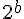
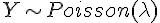
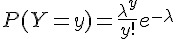
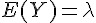
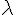
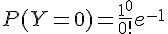

前言
編輯小語
在本期的「程式人雜誌」中，聚焦的一個主題是「比特幣」這種電子貨幣技術，透過研究這樣一個奇特的主題， 程式人應該會對技術的應用有更寬廣的視野才對。
在程式人文集當中，我們加入了「研發養成所的 Bridan、Heresy Space 的 OpenNI」等系列文章，希望能 用更多面向的角度來看這個領域，也歡迎大家捐出自己的網誌給「程式人雜誌」刊登喔！
---- （程式人雜誌編輯 - 陳鍾誠）
授權聲明
本雜誌採用 創作共用：姓名標示、相同方式分享 授權，若您想要修改本書產生衍生著作時，至少應該遵守下列授權條件：
- 標示原作者姓名
- 採用 創作共用：姓名標示、相同方式分享 的方式公開衍生著作。
另外、當本雜誌中有文章或素材並非採用 姓名標示、相同方式分享 時，將會在該文章或素材後面標示其授權，此時該文章將以該標示的方式授權釋出，請修改者注意這些授權標示，以避免產生侵權糾紛。
例如有些文章可能不希望被作為「商業性使用」，此時就可能會採用創作共用：姓名標示、非商業性、相同方式分享 的授權，此時您就不應當將該文章用於商業用途上。
最後、懇請勿移除公益捐贈的相關描述，以便讓愛心得以持續散播！
人物速寫
創業鋼鐵人 - Elon Musk

圖、Elon Musk 在 SpaceX 控制中心的照片
如果說「賈伯斯」完成了所有科技人的夢想，那麼「伊隆·馬斯克」的夢想，應該連賈伯斯本人都難以想像。
成長背景
伊隆·馬斯克（Elon Musk，1971年6月28日－） 的母親是加拿大人，而父親則是南非人，他出生於南非、高中畢業後到加拿大上大學、並在美國連續創辦了 PayPal, SpaceX 與 Tesla 等公司 (下圖是 SpaceX 與 Tesla 公司的照片)。

鋼鐵人的導演 Jon Favreau 曾經說他受到 Elon Musk 的啟發進而塑造出主角 Tony Stark (東尼、史塔克) 的性格，因此後來 Elon Musk 就被戲稱為「創業鋼鐵人」。
Elon Musk 在 10 歲那年買了第一台電腦，並且自學了程式設計。12歲時就以 500 美元的價格出售了自己的第一個太空遊戲軟體 Blastar。
17歲時（1988年） Elon Musk 從南非 Pretoria Boys High School 畢業後，為了避開南非的兵役制度，他透過母親取得了「加拿大公民」的身分， 並到「皇后大學」就讀，兩年後轉而到「賓州大學」研讀商業與物理，並在該校取得了沃頓商學院的經濟學學士學位。取得學位後繼續修讀該校 的「物理課程」，一年後又取得物理學學士學位。
Elon Musk 接著移往美國加州的矽谷，並打算在史丹福大學念應用物理與材料科學的碩博士學位，然而卻在入學兩天後就決定輟學了。
初創事業 - Zip2 與 PayPal
輟學後他和弟弟 Kimbal Musk 一起開發了一個稱為 Zip2 的線上出版軟體，並在 1999 年以「3.07億美元+3400萬美元股票期權」 賣給了 Compaq 的 AltaVista 的部門。
接著他成立了 X.com 這家公司，並在 1999 年購併了由 Max Levchin, Peter Thiel, Luke Nosek, and Ken Howery 等人於 1998 年 創立的 Confinity 公司，購併時 Confinity 已經在開發 PayPal 這個軟體幾個月了。
Elon Musk 認為 PayPal 應該有更大的用途，2000 年 10 月 Elon Musk 決定停止 X.com 的其他專案，專注於 PayPal 的開發， 並將 X.com 公司重新命名為 PayPal，接著在 2001 年將該技術用於全球最大拍賣網站 eBay 的拍賣結帳方式中。
2002 年 10 月，eBay 以 15 億美元收購了 PayPal，進一步使得 PayPal 成為全球性的網路交易結帳方案。後來 2004 年時，中國大陸也學習了這類的方案，創造了支付寶。
雄心勃勃的 SpaceX
2002 年 6 月，Elon Musk 獨自投資了 1 億美元於加州霍桑市火箭路 1 號創立了第三家公司：SpaceX（space exploration technologies）。SpaceX 是一家不可思議的公司，他們經營太空發射業務， 近期目標是發射衛星與月球探索，遠期目標是在火星打造生態環境。
換句話說，SpaceX 想要和美國國家航空暨太空總署（NASA）以及各國的太空發射中心搶生意。
Elon Musk 認為太空發射服務價格之所以高，部分原因是官僚架構沒效率所導致的，所以可以藉由十個因素去降低成本並提高太空服務的可靠性，他認為 「1100美元/公斤」每趟的價格是可以達到的。
為了達到這個目的，SpaceX 已經做出了下列的重要成績：
2005 年 1 月，SpaceX 購買了薩里衛星技術公司 (Surrey Satellite Technology Ltd) 10％的股份。
2006 年 8月18日，SpaceX宣布它獲得美國國家航空暨太空總署商業軌道運輸服務的合同，證明了這可以是一個運送貨物到國際空間站的選項。
2008 年 12 月 23 日，SpaceX宣布它獲得價值 16 億美元的商業補給服務的合同，從而保證太空梭在2010年退役後國際空間站補給的任務。
2012 年 8 月，公司與NASA簽署了一項大型開發合同，旨在設計下一代載人太空飛行器，以在2017年能夠重新啟動美國載人太空計劃。另外2家公司， 波音和Sierra Nevada也參與了類似的合同。該計劃由 NASA 的 CCiCap (商業船員綜合的能力) 制定相關標準。這將導致政府和商業公司都有能力提供商業載人太空飛行服務。作為該協議的一部分，SpaceX 公司獲得了一份合同，價值高達 4.4 億美元，於 2012年 至 2014 年 5 月交付。
Spacex 也參予了美國的火星計劃，截至 2011 年 7 月美國太空總署下屬的阿姆斯研究中心（Ames Research Center）已經開發出了一個低成本的火星任務設想，在這一設想中將使用「重型獵鷹」火箭作為發射和火星中途—入軌載具，運送「天龍」太空艙進入火星大氣層。這個代號「紅龍」的設想將會在 2012/2013 年度作為一項美國太空總署的探索任務提出以便籌集資金，計劃在 2018 年進行發射，並於數月後抵達火星。這項任務的科學目標是尋找生命存在的證據，包括搜索「可以證明生命存在的分子，例如 DNA 和高氯酸鹽還原酶……通過生物分子證明生命的存在。『紅龍』將鑽探至地下一米（3.3英尺）左右，以獲取已知潛藏於紅色土壤之下的水冰儲藏的樣本」。不包括發射成本在內，這次任務的費用預計將低於 425,000,000 美元。
為了達到「太空旅行商業化」的目的，Space X 的設計目標就是簡單，這樣既能保證最大的安全性，也能節省成本。

目前 SpaceX 已經參與過「獵鷹1號 (Falcon 1)、獵鷹9號 (Falcon 9) 與天龍號太空船 (SpaceX Dragon)」等載具的設計，上圖是這些 火箭與太空的圖片」，而下圖 (a) 則是天龍號太空船的實體， (b) 則是藝術家繪製的天龍號太空船與國際太空站對接的示意圖。

不過、事情沒有絕對順利的，在 2008 年時， SpaceX 差點因為資金不足而倒閉，還好後來得到資金挹注與合約而度過了難關。
獨步全球的 Tesla 電動車
當初 Elon Musk 之所以去史丹福修應用物理和材料科學的博士學位，目標就是研發出超級電容器能夠給電動汽車提供足夠能量。因此他會創辦 Tesla (特斯拉電動車公司) 並不令人意外。
Tesla 目前已經出過三款車型，Tesla Roadster、Model S 與最新的 Model X，2013 年的主力車 Model S 充電一次就能夠馳騁 300 公里以上，整台車的底盤全部都是電池，由於節省的引擎的空間，因此內部相當寬敞。下圖是 Tesla Roadster 與 Model S 的實體照片。

特斯拉汽車公司的第一款電動跑車 Tesla Roadster，已在31多個國家銷售超過 2300 Roadster 的美國最低售價為 109000 美元。在英國的最低售價為 86950 英鎊，在歐洲大陸的最低售價為 84000 歐元。身為電動車，Roadster在歐洲也有資格享有政府補貼。
2012 年 6 月 22 日正式發布旗下第一台商務純電動車 Tesla Model S ，售價區間在 4.99 萬- 9.79 萬美元，並沒有比同級別的汽油車，如 BMW、奧迪 A6 和 A8 貴很多，而且純電動車在許多地區可以獲得政府補貼， 因此未來進入歐洲乃至中國的可能性也不低。同時具備了舒適性、高性能、合理的售價和絕大部分純電動車所不具備的長續航里程。
因為 Tesla 電動車底盤由七千多個多個鋰電池組成的超級電池重量就超過 590公斤，所以 Tesla 採用全鋁製車身來減低整台車的重量。 Tesla 電動車可在 90秒內換好電池，而 MODEL-S 使用特殊加壓器時充滿 50% 電力僅需 20 分鐘，這些技術都讓 Tesla 的電動車對富人而言極具吸引力。因此 Tesla 電動車在加州光是 2013 年上半年就賣出了8900 年，銷量比保時捷更高。
同樣的、經營企業總是會遇到困境，Tesla 曾經因為幾起電動車起火案件而股價大跌，消費者對電動車的態度如何還需要進一步觀察。
故事的背後
然而、凡事都是有代價的，Elon Musk 創業的背後，隱藏著一些遺憾， Elon Musk 於 2000 年與 Justine Musk 結婚， 並接連生下了一對雙胞胎與一對三胞胎，總共 5 個小男孩。但是妻子 Justine 無法忍受 Elon Musk 的奇特創業家個性， 因此在 2008 年訴請離婚。於是 Justine 寫下了以下這篇被翻成中文的文章。
但是在離婚訴訟提出六星期後， Elon Musk 就發了簡訊告訴前妻 Justine ，他已經和 Talulah Riley 這位英國女星訂婚了。
三年後 (2012 年)、Elon Musk 又和 Talulah Riley 離婚了。看來、「每個成功的男人背後、都有一位偉大的女性」這句話 或許應該改寫了，至少在 Elon Musk 身後的那位偉大女性，到現在為止都還沒有出現。
家庭與夢想之間，有時候真的很為難！
或許正是因為如此，Elon Musk 才能有更多時間專注在創業這件事情上吧！
Elon Musk 曾經在 TED 上接受專訪時談到了他這些創業背後的動機，您可以發現除了早期在程式設計領域展現的才華之外， Elon Musk 所擅長的其實是在大學裏關注的「物理」領域，他對能源科技的著迷程度，促使他創造了電動車工業的 Tesla、 以及太空工業的 SpaceX。
或許也正因為相同的驅動力，所以 Elon Musk 才會參與了 SolarCity 這個太陽能公司的創建工作，他們為民宅住家 裝上太陽能板，並租用給屋主，然後透過發電慢慢回收這些投資，該公司的執行長是 Elon Musk 的表兄弟 Lyndon Rive。
2012 年七月，Elon Musk 再度提出一個令人耳目一新的「超迴路列車」(Hyperloop) 計畫，企圖建造一種結合「協和號飛機、磁軌炮、空氣曲棍球桌」原理的全新交通運輸系統，預計時速可達 1102 公里， 他認為 Hyperloop 會成為汽車、飛機、火車、船之外的第五大交通支柱。由於超迴路列車可自行利用太陽能發電，但實際上需要能源不多， 因此還能發出電力提供給電廠使用。
如果開公司提供太空服務都是可能的，那麼創建時速一千公里以上邊開還能邊發電的「超迴路列車」又有甚麼不可能呢？
Elon Musk 總是一次又一次的讓我們感到驚奇，下次如果他真的像鋼鐵人那樣在胸腔裝一個核反應爐，我應該也不會感到驚訝了！
參考文獻
- 維基百科：伊隆·馬斯克
- Wikipedia:Iron Man
- Wikipedia:PayPal
- 維基百科：鋼鐵人
- 支付寶
- SpaceX 太空探索公司
- Wikipedia:Pretoria Boys High School
- 改變世界的科技夢想家：Elon Musk 與 Steve Jobs（上）
- 改變世界的科技夢想家：Elon Musk 與 Steve Jobs（下）
- 你最想知道的矽谷新偶像 Elon Musk 人生簡史在此
- 火燒車烏雲散去！德國認Model S設計OK Tesla飆16%, 2013/12/04 09:16, 精實新聞 2013-12-04 09:16:28 記者 郭妍希 報導.
- TESLA MODEL S 吃個飯再喝杯咖啡 免費充電續跑426km
- 創業家的老婆，比創業家的女友更苦：鋼鐵人 Elon Musk 前妻的心酸告白
- 人生勝利組 Elon Musk 簡史！從 Zip2 、 Paypal 、Space X 到 Tesla
- Wikipedia:SolarCity
- 超迴路列車
【本文由陳鍾誠取材並修改自 維基百科，採用創作共用的 姓名標示、相同方式分享 授權】
程式人短訊
金融短訊：比特幣 (Bit Coin) 的運作原理
前言
最近比特幣漲到 900 美元，引起了很多注目，可惜我還不知道比特幣到底是甚麼碗糕？所以、想說趁編雜誌的機會 瞭解一下，比特幣到底是怎麼運作的。
2008 年日本的「中本聰」（Satoshi Nakamoto，化名）提出了一種數位貨幣，有興趣者請參考「中本聰」的原始論文：
- Bitcoin: A Peer-to-Peer Electronic Cash System -- http://bitcoin.org/bitcoin.pdf
隨後，他以開放、對等、共識、直接參與的理念為基準， 結合開源軟體和密碼學中塊密碼的工作模式，在P2P對等網路和分布式資料庫的平台上，開發出比特幣發行、 交易和帳戶管理的作業系統。其系統讓遍布整個對等網路使用者端的各節點，按照其種子檔案達成網路協定， 從而確保在貨幣發行、管理、流通等環節中公平、安全、可靠。並承諾比特幣將成為類似電子郵件的「電子現金」。實作在不需要審批、人人都有權發行的前提下，避免通貨膨脹，並無法偽造；支付完成之後，使用者就失去對該比特幣的所有權。2009年1月3日50個比特幣問世。
與傳統貨幣不同，比特幣執行機制不依賴中央銀行、政府、企業的支援或者信用擔保，而是依賴對等網路中種子檔案達成的網路協定，去中心化、自我完善的貨幣體制，理論上確保了任何人、機構、或政府都不可能操控比特幣的貨幣總量，或者製造通貨膨脹。它的貨幣總量按照設計預定的速率逐步增加，增加速度逐步放緩，並最終在2140年達到2100萬個的極限。
有多種途徑使用比特幣，透過電子貨幣交易所、服務商和個人等渠道，就能兌換為當地的現金或金幣；也可以直接使用它購買物品和服務。隨著接受比特幣支付的個人、組織、商家和企業的迅速增長，其匯率在四年內上漲了數千倍。 截止到2013年3月30日，全部發行比特幣按市價換算為美元後，總值突破為10億美元。雖然比特幣是目前使用最為廣泛的一種電子貨幣，但是除部分國家對虛擬貨幣有明文規定外，還沒有任何國家對比特幣的發行作出法律的規範和保障。
2009年1月3日，中本聰開創了比特幣P2P開源使用者群節點和雜湊函式系統，從此，其對等網路和它的第一個區塊鏈開始執行， 他發行了有史以來的第一組50個比特幣。
一年後，在比特幣論壇上，使用者群的自發交易中，產生了第一個比特幣公允匯率。該交易是一名使用者發送一萬個比特幣， 購買了一個披薩餅。目前，比特幣最為主要的參考匯率是 MT.GOX 交易所內比特幣與美元的成交匯率。
2013 年 11 月 18 日，在東京的 MT.GOX 市場交易的比特幣對美元匯率飆升至一對九百美元。
如果一塊披薩以 10 元美金計算的話，比特幣從 2010 年到 2013 年間，已經從萬分之十美元，漲到了九百美元，總共漲了 九十萬倍，這真是超級誇張的一種漲法啊！
比特幣的運作方法
比特幣是類似電子郵件的電子現金，交易雙方需要類似電子信箱的「比特幣錢包」和類似電郵位址的「比特幣位址」。和收發電子郵件一樣，匯款方透過電腦或智慧型手機，按收款方位址將比特幣直接付給對方。下列表格，列出了免費下載比特幣錢包和位址的部分網站。
| 使用者端名稱 | 網址 | 許可協定 |
|---|---|---|
| Multibit（雲端資料區塊功能） | http://multibit.org/ | MIT |
| Bitcoin-Qt（中本聰使用者端） | http://sourceforge.net/projects/bitcoin/ | MIT |
| My Wallet（線上錢包，獨立式） | https://blockchain.info/wallet | 專有軟體 |
| Coinbase（線上錢包，混合式） | http://coinbase.com | 專有軟體 |
| Electrum | http://electrum.ecdsa.org/ | GPL |
| Armory（具有離線儲存功能） | http://bitcoinarmory.com | AGPL |
舉例而言，「1DwunA9otZZQyhkVvkLJ8DV1tuSwMF7r3v」就是一個比特幣位址，比特幣位址是由 27 到 34 個之間的英文或數字所構成的，第一個字元只能是 1 或 3。(這個位址類似 RSA 當中的公鑰)
比特幣位址和私鑰是成對出現的，他們的關聯就像銀行卡號和密碼。比特幣位址就像銀行卡號一樣用來記錄你在該位址上存有多少比特幣。你可以隨意的生成比特幣位址來存放比特幣。每個比特幣位址在生成時，都會有一個相對應的該位址的私鑰被生成出來。這個私鑰可以證明你對該位址上的比特幣具有所有權。我們可以簡單的把比特幣位址理解成為銀行卡號，該位址的私鑰理解成為所對應銀行卡號的密碼。只有你在知道銀行密碼的情況下才能使用銀行卡號上的錢。所以，在使用比特幣錢包時請保存好你的位址和私鑰。
中本聰的論文
如果您瞭解 RSA 這樣的非對稱式金鑰加密系統，要瞭解比特幣的技術應該就不太難了。
透過公開金鑰的方式，我們可以設計出如下圖的加解密貨幣系統，來紀錄每一筆交易，但是這樣的系統有個弱點，就是沒辦法 防止同一塊錢 (coin) 被重複使用。
圖 1、傳統的數位貨幣系統架構圖
如果要避免重複使用的問題，那麼就必須要加入「造幣廠」(mint) 中央控管的方式，以下是「中本聰」在該論文談到的關鍵文句。
The problem of course is the payee can't verify that one of the owners did not double-spend the coin. A common solution is to introduce a trusted central authority, or mint, that checks every transaction for double spending. After each transaction, the coin must be returned to the mint to issue a new coin, and only coins issued directly from the mint are trusted not to be double-spent. The problem with this solution is that the fate of the entire money system depends on the company running the mint, with every transaction having to go through them, just like a bank
所以、我們需要在「沒有造幣廠中央控管」的情況下，設計出一種機制，能夠讓收款人 (payee) 確定該「數位錢幣」的前一任收款人 (previous owner) 沒有重覆花用該錢幣。
We need a way for the payee to know that the previous owners did not sign any earlier transactions. For our purposes, the earliest transaction is the one that counts, so we don't care about later attempts to double-spend. The only way to confirm the absence of a transaction is to be aware of all transactions. In the mint based model, the mint was aware of all transactions and decided which arrived first. To accomplish this without a trusted party, transactions must be publicly announced, and we need a system for participants to agree on a single history of the order in which they were received. The payee needs proof that at the time of each transaction, the majority of nodes agreed it was the first received.
為了設計出這樣的機制，中本聰提出了一個採用「時間戳記伺服器」(Timestamp Server) 的辦法，該錢幣的每一手用戶都要對前一手的訊息 (包含簽章) 再進行簽章，如下圖所示：
The solution we propose begins with a timestamp server. A timestamp server works by taking a hash of a block of items to be timestamped and widely publishing the hash, such as in a newspaper or Usenet post. The timestamp proves that the data must have existed at the time, obviously, in order to get into the hash. Each timestamp includes the previous timestamp in its hash, forming a chain, with each additional timestamp reinforcing the ones before it.
圖 2、對交易進行時間戳記的機制
雜湊現金系統
但是、光有時間戳記並沒辦法解決問題，因此中本聰寫到，我們需要一個「驗證機制」 (Proof-of-Work)，這種機制採用了 Adam Back 在 Hashcash - A Denial of Service Counter-Measure (PDF, 2002) 這篇文章中所創造出的一種「雜湊現金」系統，這種系統才是虛擬貨幣的主角，而「中本聰」的主要貢獻是將 P2P 的機制引入這種「雜湊現金」系統當中，並創造出對應的程式。 。
To implement a distributed timestamp server on a peer-to-peer basis, we will need to use a proof-of-work system similar to Adam Back's Hashcash, rather than newspaper or Usenet posts.
註 1：上述 Adam Back 的論文並非第一篇，而是 Adam Back 在 1997 年提出 hashcash stamp 五年後的一個總結版本，後來 Adam Back 為此成立了 http://www.hashcash.org/ 這個網站：
註 2：學術論文往往都是這樣，看一篇論文時，最麻煩的是一層一層往上追，追出與該技術相關的重要論文，以便串出整個故事的脈絡。
那麼、到底 Adam Back 的論文說了些甚麼呢？其中的關鍵在於一個稱為成本函數 (Cost-Functions) 的技術上面。
成本函數 (Cost-Functions)
為了建構出一種無法否認的「數位現金」系統，必須仰賴一類稱為「成本函數」 (Cost-Functions) 的不可逆函數，這種函數「很容易驗證」(efficiently verifiable)，但是卻很難破解 (parameterisably expensive to compute)。
A cost-function should be efficiently verifiable, but parameterisably expensive to compute. We use the following notation to define a cost-function.
成本函數並非只被用在現金系統上，也可以用在對付「垃圾郵件」上，例如以下文章中就記載可用像「因數分解」這樣的問題來考驗「寄信者」 讓他們不容易到處發垃圾信，因為收信端只接受那些「通過因數分解」問題的信件，於是發垃圾郵件者就必須耗費大量的 CPU 時間去發信給這些採用 Cost-Functions 認證的人，否則信件就不會被接受。
- 可爱的 Python: 用 hashcash 打击垃圾邮件-想发送垃圾邮件，就要付出代价, David Mertz, Ph.D. (mertz@gnosis.cx), 开发人员, Gnosis Software, Inc.
對交互式質詢來說，因數分解足以勝任。比如，我有一個在線資源，希望您能象徵性地為其付出代價。 我可以向您發送一個消息，說“只要您能因數分解這個數，我將讓您得到這個資源”。沒有誠意的人將無法得到我的資源，只有那些能夠證明自己有足夠的興趣、付出一些 CPU 周期來回答這個質詢的人才能得到這個資源。
但是質數問題並不是最好用的，目前最常使用的 Cost-Function 是 SHA (Secure Hash Algorithm)，其運作方法如下
為了實現非交互式的“支付（payment）”，hashcash 讓我向所有想給我發送電子郵件的人都分發一個 標准質詢。在您的消息頭中，必須包括一個合法的 hashcash 戳記（hashcash stamp）；具體地說，該標志中包含我的收件人地址。
hashcash 提出質詢的方式是，當通過安全散列算法（Secure Hash Algorithm）進行散列時，要求 “minters” 生成一個字符串（戳記，stamps），在它們的散列中有很多前導零。所找到的前導零的數目就是特定戳記的比特值。 給定 SHA-1 的一致性與加密強度，找出給定比特值的 hashcash 戳記的惟一已知途徑是平均  次運行 SHA-1。
然而，要確認一個戳記，只需要進行一次 SHA-1 計算即可。對於電子郵件中的應用來說，當前推薦使用的是 20-比特值： 為了找到一個合法的戳記，發送者需要進行大約一百萬次嘗試，在最新的 CPU 和經過編譯的應用程序上，這將需要不到一秒的時間。在相對舊一些的機器上它也只需要幾秒鐘的時間。
由於 SHA 函數可以很容易的設定 b 的大小，從而可以很容易的控制該 Cost-Function 的難度，於是我門就可以指定希望耗用的 CPU 時間， 而那些願意耗用這些 CPU 時間的人，就可以透過 「CPU 時間」換取這種「數位現金」。
於是、我們就可以利用這種方式，去考驗某些人是否有足夠的「耐心」，因為這些人必須努力的用 CPU 時間去通過考驗，然後才能得到 那些「現金」(也就是某種蘿蔔或報償，像是取得寄送 email 給某人的權利，或者擁有一個比特幣的權利)。
如果您對「雜湊現金的實作技術」有興趣，可以參考筆者的另一篇文章，連結如下：
註 3：必須注意的是，比特幣採用的算法是 SHA-2 族群的 SHA-256 算法，而非上述防止垃圾郵件文章中所使用的 SHA-1 演算法，SHA-256 比 SHA-1 更加安全，更難破解。
註 4：SHA-2 一族的算法針對 SHA-1 進行了安全改良，SHA-2 其實是 SHA-224, SHA-256, SHA-384, SHA-512 的統稱。
驗證系統
那麼、到底這種「雜湊現金」是如何運作的呢？後來我仔細思考，終於瞭解了其原理，而且我寫了一個採用 SHA-1 的程式，用來「雜湊出 24 bit 的前導零」 ，以下是該程式的執行結果：
D:\Dropbox\Public\web\codedata\code\sha1>gcc hashcash.c -o hashcash
D:\Dropbox\Public\web\codedata\code\sha1>hashcash
Current local time and date: Mon Dec 16 19:33:03 2013
msg=from:abc@gmail.com to:ccckmit@gmail.com title=hello! nonce=13973878
hash=00000016aa26951d1653fe515f112fe41d8ebd45
Current local time and date: Mon Dec 16 19:34:27 2013在該程式中，我們從 nonce=0 開始尋找，希望能夠找到一個包含 nonce=數字 的樣式，可以讓 SHA-1 的雜湊值，開頭有 24bit 的前導零， 於是在經過一千三百多萬次之後，我們找到 nonce=13973878 可以滿足雜湊值有 24bit (=4*6, 6 個十六進位數字) 的前導零，也就是 下列訊息的雜湊值為 00000016aa26951d1653fe515f112fe41d8ebd45 ，滿足有 24bit 前導零的要求，所以通過了「雜湊現金」的測試。
from:abc@gmail.com to:ccckmit@gmail.com title=hello! nonce=13973878於是我們可以將這個訊息傳送給採用「SHA-1 認證的雜湊現金」郵件收件系統，對方就可以看到訊息了！
讓我們回到中本聰的論文裏，談到如何建構「驗證系統」(proof-of-work) 的那部份，中本聰比特幣可以採用像 SHA-256 這樣的雜湊函數可以用來建立簽章鏈。
The proof-of-work involves scanning for a value that when hashed, such as with SHA-256, the hash begins with a number of zero bits. The average work required is exponential in the number of zero bits required and can be verified by executing a single hash.
但是一但簽章者找出並簽上之後，要驗證時只需要一次的 SHA 運算就行了，因此這種 「要求符合前導零數量的 SHA 運算」 完全符合上述的「成本函數」(Cost-Function) 之要求。
有了像 SHA 這類的 Cost-Function 之後，中本聰想出了一種仰賴於 CPU 總計算時間的「時間戳記系統」，這種簽章系統仰賴 SHA 中前導 0 個數 (b) 來確認該「簽章鏈」 (Block-Chain) 的文件與雜湊值是否正確，以下是「中本聰」論文中的圖片與說明：
圖 3、愈往後、簽章填入愈困難的簽章鏈 (Block-Chain)
For our timestamp network, we implement the proof-of-work by incrementing a nonce in the block until a value is found that gives the block's hash the required zero bits.
接著中本聰說，如果有人想要從某節點開始偽造，就必須偽造該節點之後的所有簽章，除非他能計算的比所有其他人的總和更快，否則將無法成功的騙過大家，如下文所示：
Once the CPU effort has been expended to make it satisfy the proof-of-work, the block cannot be changed without redoing the work. As later blocks are chained after it, the work to change the block would include redoing all the blocks after it.
因此誠實的伺服器總是佔有優勢的，因為誠實者不需從頭計算起，只要忠實的將他人計算出的簽章記錄下來就行了，因此想要偽造的人通常會耗費大量的 CPU 時間，而且很難打敗誠實的伺服器。
這樣的系統也在某種程度上解決了「投票決定誰是老大」的問題，而這種投票機制是建構在「一顆 CPU 一票」的架構上，而非像網路用一個 IP 位址一票的方式。在這種架構下，誰的簽章鏈最長，誰就是擁有決定權的老大，而誠實的伺服器由於不需重新計算簽章，因此比不誠實者更具有優勢。
The proof-of-work also solves the problem of determining representation in majority decision making. If the majority were based on one-IP-address-one-vote, it could be subverted by anyone able to allocate many IPs. Proof-of-work is essentially one-CPU-one-vote. The majority decision is represented by the longest chain, which has the greatest proof-of-work effort invested in it. If a majority of CPU power is controlled by honest nodes, the honest chain will grow the fastest and outpace any competing chains. To modify a past block, an attacker would have to redo the proof-of-work of the block and all blocks after it and then catch up with and surpass the work of the honest nodes. We will show later that the probability of a slower attacker catching up diminishes exponentially as subsequent blocks are added.
- 註 5 : 在 https://en.bitcoin.it/wiki/Nonce 這個比特幣網站中，對 Nonce 一詞進行了解釋如下，所以比特幣要求 SHA-256 要能找出可以符合 b 個前導零的簽章才能被認證，這也是為何前導零越多越難找到的原因了。
The "nonce" in a bitcoin block is a 32-bit (4-byte) field whose value is set so that the hash of the block will contain a run of zeros. The rest of the fields may not be changed, as they have a defined meaning.
Any change to the block data (such as the nonce) will make the block hash completely different. Since it is believed infeasible to predict which combination of bits will result in the right hash, many different nonce values are tried, and the hash is recomputed for each value until a hash containing the required number of zero bits is found. As this iterative calculation requires time and resources, the presentation of the block with the correct nonce value constitutes proof of work.
您可以從以下這個代表 Block #274933 的比特幣區塊網頁看到，其中的 hash 值有很多個前導零，這些比特幣交易訊息的網頁可以做為進一步研究比特幣運作機制的參考。
註 6: 在 How Bitcoin Hashing Works 這個網頁中，有一段話解釋了 nonce 的概念如下：
The nonce (rhymes with once), is a user editable 4 byte field to calculate the final hash. This will typically start at 0, and for every unsuccessful hash will be incremented and hashed again. It will continue this until 2^32 numbers are checked, and if the last one is invalid, a message will be sent to the network saying the Merkle Root extended nonce needs to be increased and the whole process starts again.
So how do you determine if the hash is valid or not? The target. The final hash needs to be less than or equal to the target.
This target is the "Bits" field, only it has to be padded. However, since getting such a low target (in most cases) is so difficult, so most miners choose the largest target value they can compare to and check to see if the hash they got meets the requirements and then sends it off.
簽章與貨幣之間的關係
但是看到這裡，中本聰雖然說明了可以用 「SHA-256 雜湊現金」的方式來認證，但是這與「比特幣」之間的關係是甚麼呢？
關於這點，我在該論文裏沒有看到相關的說明語句，但是根據整個論文的邏輯，我的理解推論如下：
假如每填入一個簽章，就可以獲得一枚比特幣，那麼所有人就都要努力的去填入簽章，以便獲得比特幣。
但是這樣有個問題，一開始沒有任何比特幣，因此也就沒有任何的「交易」，沒有交易的話那就不需要簽章了，所以這世界上根本就不會有這樣的貨幣存在啊。
因此、系統必須採用某些貨幣產生策略，穩定的產生一些比特幣作為那些建立伺服器讓比特幣系統運作起來的網站之報酬。
中本聰稱這種報酬為 Incentive (獎勵)。
於是中本聰寫到：
By convention, the first transaction in a block is a special transaction that starts a new coin owned by the creator of the block. This adds an incentive for nodes to support the network, and provides a way to initially distribute coins into circulation, since there is no central authority to issue them. The steady addition of a constant of amount of new coins is analogous to gold miners expending resources to add gold to circulation. In our case, it is CPU time and electricity that is expended.
當然、這種獎勵機制應該是公開透明、而且可以被所有伺服器計算出來的，否則就會有些伺服器亂給自己獎勵了。
有了這種獎勵機制之後，就能解決「一開始沒有任何比特幣」的問題，於是整個系統就可以完整的運作了。
為何「比特幣挖礦」越來越難？
當這些獎勵注入系統時，就有可能開始進行交易了，有了交易，那麼就會產生如圖 1 所示的交易鏈，而這些交易鏈需要簽章以避免 被惡意竄改 (如圖 2)，而那些幫忙計算簽章的人又可以獲得一些比特幣，於是比特幣就會越來越多。
但是這並不能說明為何 2010 年時挖比特幣很容易，2013 年的現在卻很難，因此還有一些疑點待查證的，
說明：我猜測「比特幣」一開始時，前導零的長度可能很小，貨幣發行率 (Incentive, 獎勵) 也比較高，但是隨著時間與挖掘的數量，筆者推測貨幣發行率將會降低，而且前導零的長度應該會隨之增加， 也就是 b 的値會越來越大，於是想要找出符合這種 b 個前導零的 SHA 雜湊值就會越來越難了 (因為要花費 次 SHA 運算)，這應該也就是比特幣之所以越來越難挖的原因了。
研讀至此，我大概已經理解了比特幣的運作原理，剩下的就是整個「貨幣系統」的建構細節考量了！
在論文的後半段，中本聰說明了這種「比特幣網路」的建構與訊息流通原理，另外還透過「布瓦松分布」(Poisson Distribution) 去分析 比特幣被駭客攻擊，導致某些簽章鏈被修改的機率。對於這部份有興趣的朋友就請直接看原始論文囉！
但是、在讀完中本聰的比特幣論文之後，筆者仍然有個疑問，現行比特幣的「獎勵公式」到底是甚麼呢？中本聰在論文裏好像沒有提出說明！
後記
這篇文章是筆者研讀「中本聰」的比特幣論文 Bitcoin: A Peer-to-Peer Electronic Cash System 的筆記，一開始筆者完全不瞭解這個領域的技術，研讀時也沒辦法徹底理解文中很多技術的意義，還好筆者有點密碼學的概念，因此稍微可以讀懂。
於是當我寫了「初稿」之後就在 自己的 facebook 上 與 程式人雜誌社團 裏分享給網友看，結果看的人還不少，甚至有些網友還指出文章中的一些問題，像是有人說「比特幣不是採用 SHA-256 嗎？」，於是筆者查證之後發現確實是 SHA-256，因此趕緊更正，然後又有網友發現我對 nonce 的解釋有問題，因此說：「至少 nonce 的運作方式說明錯了, 公開的發表要小心!」，而且還告訴我們「 https://blockchain.info/ 可以查到比特幣的立即資訊」，這讓筆者可以透過觀察「比特幣交易」更進一步瞭解比特幣的運作方式。
筆者並非很嚴謹的人，而且很喜歡分享文章，因此往往在文章寫好後就分享出去。在這篇文章的分享過程中，我發現了這種「早期就分享文章」的撰寫方式，其實有點像 Linux 這種開放原始碼軟體的建構方式，透過不斷的修改與分享，可以讓「讀者與作者」隨時進行交流，於是「程式與文章」都可以透過這種交流逐漸成熟。
在開放原始碼領域，領域裏的 Eric Steven Raymond 曾經寫過一篇稱為「 大教堂和市集 」的經典文章，將傳統軟體開發隱喻為「大教堂模式」，而開放原始碼像 Linux 這樣的系統開發則隱喻為「市集模式」。
結果 Eric Steven Raymond 發現市集模式其實也可以做出很好的軟體，像是 Linux 等這樣大型的作業系統，也可以透過市集模式建構出來。
而在這篇文章的撰寫過程當中，我們也發現採用「類似市集模式」的方法，我們也可以用在寫作文章上面。未來或許會有些偉大的文章或書籍，是採用市集模式撰寫出來的也說不定呢？ (其實、維基百科就是這樣一個範例，不是嗎？)
參考文獻
- Bitcoin: A Peer-to-Peer Electronic Cash System -- http://bitcoin.org/bitcoin.pdf
- 維基百科：比特幣
- Wikipedia:Cryptographic nonce
- https://en.bitcoin.it/wiki/Nonce
- How Bitcoin Hashing Works
- Hashcash - A Denial of Service Counter-Measure (PDF), 1st August 2002
- http://www.hashcash.org/
- 自由時報：美正視虛擬貨幣 比特幣爭合法
- 可爱的 Python: 用 hashcash 打击垃圾邮件-想发送垃圾邮件，就要付出代价, David Mertz, Ph.D. (mertz@gnosis.cx), 开发人员, Gnosis Software, Inc.
- 用人话解释比特币原理
- 比特幣挖礦的背後 -- SHA 與雜湊現金
【本文由陳鍾誠取材並修改自 維基百科，採用創作共用的 姓名標示、相同方式分享 授權】
金融短訊：SHA 安全雜湊算法
由於上文介紹「比特幣」時發現「安全雜湊算法家族 SHA」 是該系統的一個關鍵演算法，目前的比特幣採用 SHA-2 (SHA-224、SHA-256、SHA-384，和SHA-512 的統稱, 比特幣應該是採用 SHA-256) 的演算法，因此我們將在此介紹有關 SHA 算法家族的原理，以便能進一步理解「比特幣」的運作原理。
簡介
安全雜湊演算法（英語：Secure Hash Algorithm）是一種能計算出一個數位訊息所對應到的，長度固定的字串（又稱訊息摘要）的演算法。且若輸入的訊息不同，它們對應到不同字串的機率很高；而SHA是FIPS所認證的五種安全雜湊演算法。這些演算法之所以稱作「安全」是基於以下兩點（根據官方標準的描述）：「1)由訊息摘要反推原輸入訊息，從計算理論上來說是很困難的。2)想要找到兩組不同的訊息對應到相同的訊息摘要，從計算理論上來說也是很困難的。任何對輸入訊息的變動，都有很高的機率導致其產生的訊息摘要迥異。」
SHA家族的五個演算法，分別是SHA-1、SHA-224、SHA-256、SHA-384，和SHA-512，由美國國家安全域（NSA）所設計，並由美國國家標準與技術研究院（NIST）發佈；是美國的政府標準。後四者有時並稱為SHA-2。SHA-1在許多安全協定中廣為使用，包括TLS和SSL、PGP、SSH、S/MIME和IPsec，曾被視為是MD5（更早之前被廣為使用的雜湊函式）的後繼者。但SHA-1的安全性如今被密碼學家嚴重質疑；雖然至今尚未出現對SHA-2有效的攻擊，它的演算法跟SHA-1基本上仍然相似；因此有些人開始發展其他替代的雜湊演算法。緣於最近對SHA-1的種種攻擊發表，「美國國家標準與技術研究院（NIST）開始設法經由公開競爭管道（類似高級加密標準AES的發展經過），發展一個或多個新的雜湊演算法。」
2012年10月2號，Keccak被選為NIST雜湊函式競賽的勝利者,成為SHA-3。 SHA-3並不是要取代SHA-2，因為SHA-2目前並沒有出現明顯的弱點。由於對MD5出現成功的破解，以及對SHA-0和SHA-1出現理論上破解的方法，NIST感覺需要一個與之前演算法不同的，可替換的加密雜湊演算法，也就是現在的SHA-3。設計者宣稱在Intel Core 2的CPU上面，此演算法的效能是12.5cpb（每位元組周期數，cycles per byte）。不過，在硬體實做上面，這個演算法比起其他演算法明顯的快上很多。
SHA-0 和 SHA-1可將一個最大 2 的 64 次方位元的訊息，轉換成一串160位元的訊息摘要；其設計原理相似於MIT教授Ronald L. Rivest所設計的密碼學雜湊演算法 MD4 和 MD5。
安全雜湊算法 SHA 家族的「輸入、輸出、迴圈次數、與目前的安全性」等特性，可參考以下列表。

圖、雜湊算法 SHA 家族的特性表
SHA-1 的演算法
以下是 SHA-1 演算法其中一個步驟的示意圖：

圖、SHA-1 演算法的一個步驟
完整的 SHA-1 演算法如下所示：
// Note: All variables are unsigned 32 bits and wrap modulo 2^32 when calculating
// 注意：所有變數都是 32 位元的無號整數，而且計算時都會對 2^32 取餘數。
// Initialize variables: 初始化下列變數
h0 := 0x67452301
h1 := 0xEFCDAB89
h2 := 0x98BADCFE
h3 := 0x10325476
h4 := 0xC3D2E1F0
// Pre-processing: 前處理階段
append the bit '1' to the message (對訊息補上一個 1)
append k bits '0', where k is the minimum number >= 0 such that the resulting message
length (in bits) is congruent to 448(mod 512) (若訊息長度未達 448 mod 512，則補一堆 0)
append length of message (before pre-processing), in bits, as 64-bit big-endian integer (
// Process the message in successive 512-bit chunks:
break message into 512-bit chunks
for each chunk
break chunk into sixteen 32-bit big-endian words w[i], 0 ≤ i ≤ 15
// Extend the sixteen 32-bit words into eighty 32-bit words:
for i from 16 to 79
w[i] := (w[i-3] xor w[i-8] xor w[i-14] xor w[i-16]) leftrotate 1
// Initialize hash value for this chunk:
a := h0
b := h1
c := h2
d := h3
e := h4
// Main loop:
for i from 0 to 79
if 0 ≤ i ≤ 19 then
f := (b and c) or ((not b) and d)
k := 0x5A827999
else if 20 ≤ i ≤ 39
f := b xor c xor d
k := 0x6ED9EBA1
else if 40 ≤ i ≤ 59
f := (b and c) or (b and d) or(c and d)
k := 0x8F1BBCDC
else if 60 ≤ i ≤ 79
f := b xor c xor d
k := 0xCA62C1D6
temp := (a leftrotate 5) + f + e + k + w[i]
e := d
d := c
c := b leftrotate 30
b := a
a := temp
// Add this chunk's hash to result so far:
h0 := h0 + a
h1 := h1 + b
h2 := h2 + c
h3 := h3 + d
h4 := h4 + e
// Produce the final hash value (big-endian):
digest = hash = h0 append h1 append h2 append h3 append h4SHA-1 的編碼範例
以下幾個範例顯示了 SHA-1 的用法：
範例一：SHA-1 的編碼範例
SHA1("The quick brown fox jumps over the lazy dog")
16進位：2fd4e1c6 7a2d28fc ed849ee1 bb76e739 1b93eb12
Base64：L9ThxnotKPzthJ7hu3bnORuT6xI=範例二：範例一中的 dog 改為 cog 之後，SHA-1 的編碼結果就完全不同了。(而這也正式難以破解的原因，無跡可尋啊!)
SHA1("The quick brown fox jumps over the lazy cog")
16進位：de9f2c7f d25e1b3a fad3e85a 0bd17d9b 100db4b3
Base64：3p8sf9JeGzr60+haC9F9mxANtLM=範例三：空字串的 SHA-1 編碼結果
SHA1("")
16進位：da39a3ee 5e6b4b0d 3255bfef 95601890 afd80709
Base64：2jmj7l5rSw0yVb/vlWAYkK/YBwk=如果您對「如何用 SHA-1 實作雜湊現金技術」有興趣，可以參考筆者的另一篇文章，連結如下：
結語
雖然 SHA-1 已經在各種資訊安全協定中廣被採用，但還是有些弱點，這也是為何要開發 SHA-2 與 SHA-3 的原因。
2005年，Rijmen 和 Oswald 發表了對 SHA-1 較弱版本（53次的加密迴圈而非80次）的攻擊：在  的計算複雜度之內找到碰撞。
的計算複雜度之內找到碰撞。
2005年二月，王小雲、殷益群及於紅波發表了對完整版SHA-1的攻擊，只需少於  的計算複雜度，就能找到一組碰撞。
的計算複雜度，就能找到一組碰撞。
2005年8月17日的 CRYPTO 會議尾聲中王小雲、姚期智、姚儲楓再度發表更有效率的SHA-1攻擊法，能在  個計算複雜度內找到碰撞。
個計算複雜度內找到碰撞。
2006年的 CRYPTO 會議上，Christian Rechberger和Christophe DeCannière 宣布他們能在容許攻擊者決定部分原訊息的條件之下，找到SHA-1的一個碰撞。
不過這些攻擊法其實還是需要  以上的複雜度，而比特幣所採用的 SHA-2 到目前為止還沒有被較快速破解成功的案例， 但是還是有人認為 SHA-2 其實並不夠安全，像是以下文章就有這方面的質疑。
以上的複雜度，而比特幣所採用的 SHA-2 到目前為止還沒有被較快速破解成功的案例， 但是還是有人認為 SHA-2 其實並不夠安全，像是以下文章就有這方面的質疑。
隨著技術進步，加密法似乎總是必須更新以防止破解的，不過類似比特幣這樣的系統，是相當有啟發性且創新的一種做法， 資訊領域的技術進入金融世界之後，或許還能摩擦出更多的火花也說不定。
參考文獻
- 維基百科：SHA家族
- Wikipedia:SHA-1
- rfc3174: US Secure Hash Algorithm 1 (SHA1)
- 資訊與網路安全技術
- 5-8 SHA-1 (Secure Hash Algorithm) 演算法
- 5-6 MD5 壓縮函數
【本文由陳鍾誠取材並修改自 維基百科，採用創作共用的 姓名標示、相同方式分享 授權】
影音頻道
看影片瞭比特幣的原理
在前面的兩篇文章中，我們介紹了比特幣的運作原理，以下是文章的連結：
看了上面兩篇有關比特幣的文章之後，大致上可以對比特幣的演算法有點概念，卻尚未瞭解比特幣如何挖掘等等問題，因此我們 找了一些與比特幣有關的影片，給讀者們參考。
| 影片 | 內容簡介 | 連結 |
|---|---|---|
| 什麼是比特幣 ？ | 1分59秒的比特幣介紹短片 | http://youtu.be/K0myd5fwbqE |
| 比特幣建立於密碼學算法 設計思路類似黃金 | 1分49秒的比特幣介紹短片 | http://youtu.be/2K2s6KxaiYA |
| 我也會賺比特幣! | 介紹比特幣挖礦軟體與網站的使用 | http://youtu.be/OiPIpz3eUkM |
| 新聞特攻隊 比特幣 | 20130825 非凡新聞報導 | http://youtu.be/Egw-EdMVZ4w |
| Bitcoin大揭密 | 中國大陸的比特幣新聞介紹 | http://youtu.be/RoKXfPHF9Ek |
看了上述影片之後，我們大致可以理解比特幣的實際運作方式，以及如何使用比特幣電子錢包與挖礦軟體了 (特別是參考「我也會賺比特幣!」這篇)，這些影片應該能幫助讀者更進一步理解必特幣的實務概念。
但是、畢竟「比特幣」是一種無中生有的貨幣，沒有與真實的黃金或白銀等實體掛勾，所以比特幣的價值如何完全取決於 市場心理學，而且沒有官方的法定效力，這些都是比特幣的風險！
不過、對於研究技術的程式人而言，「瞭解比特幣的運作原理」或許比「透過比特幣賺錢」更令人感到開心， 因為這樣一種開創新局的技術，畢竟是值得程式人深入瞭解的，或許未來類似的技術真的會形成某種全球性的法定貨幣 也說不定呢？
程式人討論區
年度討論回顧與摘要
在今年的 程式人雜誌社團 的討論中，筆者找出了自己較有興趣的幾篇文章，以供大家參考！
- 20分鐘了解 CPU 基本運作
- http://blog.codylab.com/how-cpu-works/
- 評論：簡單清楚的描述 CPU 的運作方式。
- 像乐高一样可拼装机器人现身 无需外部布线
- ChamberPlus System Level Studio: 一隻返鄉鮭魚的故事
- http://chamberplus.blogspot.tw/2013/12/blog-post_6.html
- 評論：很有心的 Maker 。
- NodeJS无所不能：细数10个令人惊讶的NodeJS开源项目-CSDN.NET
- http://www.csdn.net/article/2013-12-17/2817827-10-surprising-Node.js-projects
- 評論：「NodeOS、Noduino、Node-WebKit、PDFKit、Haroopad」等專案，讓我大開眼界，很有用啊！
- Hsingyu Li: ［推薦一張相當威猛的心智圖］: 臺灣 自由or開放 軟體＋硬體 社群列表，很適合所有人使用，不管是初階還是高階。
- http://www.mindmeister.com/303031964/open-source-community-map-in-taiwan
- 評論：這張圖詳盡的列出了「台灣的軟硬體領域各種社群」的分佈，果然是很威猛的一張圖。
- 陳鍾誠：這個老兄，不會寫程式，於是用十盒 Pizza ，辦了一個黑客松，然後創造了一個 APP，接著開了一家公司 .......這簡直是絕佳的創業模式啊！
- http://www.businessweekly.com.tw/KArticle.aspx?id=52572
- 評論：我也要辦黑客松 ....
- 陳鍾誠：我在想，如果資工系的學生都在上大學之前就知道這件事，不知道全國有多少資工系要滅系了 .....不過反過來想，能夠在瞭解了這件事的情況下還選擇資工系，那應該就是有強烈動機的程式人了 .....
- 陳鍾誠：十大易用性原則 « 嫁給RD的 UI Designer
- 戴上為：O'Relly電子書新學習環境(可免費不用註冊線上閱讀)
- http://chimera.labs.oreilly.com/
- 評論：好書寶庫 ....
- Doremi Chen : 這些工具真的很值得推薦...可以激发孩子编程兴趣的十个工具 - 极客范 - GeekFan.net
- http://www.geekfan.net/3974/
- 評論：可以用來教小孩 ....
- 陳鍾誠：台灣與金門甚麼時候才能有這樣的課啊 .....http://pansci.tw/archives/50495
- http://pansci.tw/archives/50495
- 評論：我好想修這們課啊 ....
- Unri Gooper: 淺顯易懂解說千萬級服務伺服器架構
- http://yowureport.com/?p=8944
- 評論：好文，要登入才看得到，這篇還帶出淘寶的一系列技術文章：淘寶的起源故事、技術發展之路 – 2013
- 陳鍾誠:如果沒有安全與品質問題，這看來像是殺手級的第三次工業革命推動器 .....加上 FPGA ，工廠搬進家庭的革命就快完成了 .....
- 陳鍾誠:世界上最美麗的女人、手機通訊之母
- http://blog.xuite.net/trshang/myarticles/65103368
- 評論：美麗又有智慧 ....
- 陳鍾誠:【血淚歷程】遊戲工作室如何在缺乏資金下求生存 - 粉酷多
- http://www.fankudo.com/gannner/13932
- 評論：經典的創業過程 ....
- Heresy Ku:非常經典的 UTF-8…
- 非常經典的 UTF-8
- 評論：好文分享 ....
有時候我常常看到一些好文，但要找的時候卻想不起來該如何找起，透過這樣的整理希望讓大家都可以看到這些好文章！
程式與科學
用電腦學數學 -- WolframAlpha 篇
WolframAlpha 網站
http://www.wolframalpha.com/ 是由 Wolfram Research, Inc. 這家公司所設計經營的一個網站， 或許很多人沒聽過這家公司，但如果說起該公司的產品 Mathematica 這個數學軟體，那應該就有很多 人聽過了。
Wolfram Research公司的總裁史蒂芬·沃爾夫勒姆於 2009年3月宣布了 Wolfram|Alpha 計劃， 該網站於 2009年5月15日正式上線。該網站曾在美國Popular Science雜誌的投票評選中獲得 2009年度最偉大的科技創新產品的榮譽。
一進入 WolframAlpha 這個網站，您可能會以為該網站是一個搜尋引擎，因為長得有點像 Google， 只不過界面更漂亮了一些。

圖、WolframAlpha 的首頁
如果您還沒用過該網站，請點選 Examples 連結，您會看到下列畫面。

圖、WolframAlpha 的範例集
仔細翻閱一下這個些範例，您會發現這個網站的神奇之處，他竟然可以解答 「數學、天文、地理、統計、化學、金融、物理、星象、工程、交通、電腦、....」等等問題。
既然 Wolfram 是 Mathematica 軟體的創造者，想必數學應該是他們的強項，就讓我們來用用看。
用 WolframAlpha 學數學
當您進入 http://www.wolframalpha.com/examples/Math.html 這個數學領域的範例網頁， 您會看到 WolframAlpha 可以解答的數學問題真的是五花八門，從基本的「加減乘除」到 「微分方程」都有。
WolframAlpha 可以「畫函數曲線圖、做符號微積分、數值微積分、求方程式的解」等等， 由於筆者正在教授微積分的課程，因此就讓我們先用 WolframAlpha 來學學微積分好了。
以下是微分指令「derivative of x^4 sin x」的顯示結果，除了顯示出  的運算結果之外，還顯示了該函數的線圖，與泰勒展開式的前幾項等等，以下是顯示的畫面截圖。
的運算結果之外，還顯示了該函數的線圖，與泰勒展開式的前幾項等等，以下是顯示的畫面截圖。

圖、符號微分的畫面
會做微分並不算甚麼，積分行不行呢？答案當然是可以的，以下是筆者輸入的積分範例：
integrate e^x sin x dx from x=0 to pi結果 WolframAlpha 回應了以下結果：

圖、符號積分的畫面
最下面顯示了不定積分的原型  。
。
而最上面則顯示了定積分的結果  。
。
以上結果是正確的！
解微分方程式
接著筆者輸入 C V'(t) = -V(t)/R 這個電容放電時的微分方程式，結果 WolframAlpha 回應畫面如下：

圖、微分方程的畫面
上圖中最下面的部份顯示了該微分方程的解答如下，這也是正確答案。

結語
看來、筆者似乎可以用這個網站來教「微積分、線性代數、機率統計、離散數學」等資訊工程領域的數學課， 應該是沒有問題的了！
補充：在本文預覽版分享出去之後，有朋友提到開放原始碼領域也有一個對應的網站，是用 Python 的 SymPi 建構而成的， 而且也可以安裝在自己的電腦上使用，該網站稱為 Mathics ，網址如下：
參考文獻
- 維基百科：Wolfram Alpha
- 維基百科：沃爾夫勒姆研究公司
- 維基百科：MathWorld
- 出考題？知識引擎 Wolfram Alpha 幫你搞定！
【本文由陳鍾誠取材並修改自 維基百科，採用創作共用的 姓名標示、相同方式分享 授權】
程式人文集
Arduino入門教學(13) – 使用光敏電阻控制伺服馬達 (作者：Cooper Maa)
實驗目的
練習用光敏電阻控制伺服馬達(Servo motor)。以兩顆光敏電阻做一個簡單的光源追蹤系統，當發現左邊比較亮時，就控制伺服馬達旋轉到左邊，當發現右邊比較亮時，就控制伺服馬達旋轉到右邊。

讀者必備知識
為了順利進行本項實驗，你必須先知道底下這些基礎知識:
認識光敏電阻。相關資訊可參考「Lab8 使用光敏電阻控制 LED 的開關」一文。 知道如何控制伺服馬達。相關資訊可參考「Lab16 使用可變電阻控制伺服馬達」一文。 材料
- 麵包板 x 1
- Arduino 主板 x 1
- 光敏電阻(photocell) x 2
- 伺服馬達(Servo Motor) x 1
- 10k ohm 電阻 x 2
- 單心線 x N
- 接線
伺服馬達有三條線，電源(紅線)、接地(黑線)，以及訊號線。

伺服馬達紅線接到 +5v，黑線接到 GND，訊號線接到 pin 9 左手邊的光敏電阻一支腳接到 5V，另一支腳串接一顆 10k 電阻接到 analog pin 0 右手邊的光敏電阻一支腳接到 5V，另一支腳串接一顆 10k 電阻接到 analog pin 1

下圖是本實驗的接法，為了判斷哪一邊光線比較強，所以稍微折彎了兩顆光敏電阻，讓它一顆往左彎，另一顆往右彎：

電路圖

程式碼
版本一(PhotocellServo.pde): 底下是這個簡單光源追蹤系統的程式碼，程式的邏輯是，當發現左邊比較亮時，就控制伺服馬達旋轉到左邊(旋轉到 0 度)，當發現右邊比較亮時，就控制伺服馬達旋轉到右邊(旋轉到 180 度)。程式同時把左右兩顆光敏電阻的讀值印到了 Serial port，到時就可以用 Serial Monitor 觀察光敏電阻數值的變化。
// 使用光敏電阻控制 Servo
// 引用 Servo Library
#include <Servo.h>
// 建立一個 Servo 物件
Servo myservo;
// 兩顆光敏電阻接在 Analog pin 0 及 pin 1
int sensorLeft = 0;
int sensorRight = 1;
void setup()
{
Serial.begin(9600);
myservo.attach(9); // Servo 接在 pin 9
}
void loop()
{
int readingLeft, readingRight;
// 讀取左右兩顆光敏電阻的讀值
readingLeft = analogRead(sensorLeft);
readingRight = analogRead(sensorRight);
if (readingLeft > readingRight) {
// 左邊光敏電阻較亮，控制 Servo 轉到 0 度
myservo.write(0); // 設定 Servo 旋轉角度
delay(15); // 等 Servo 旋轉
} else {
// 右邊光敏電阻較亮，控制 Servo 轉到 180 度
myservo.write(180); // 設定 Servo 旋轉角度
delay(15); // 等待 Servo 旋轉
}
// 印出左右兩顆光敏電阻的讀值
Serial.print("left: "); Serial.print(readingLeft);
Serial.print(" right: "); Serial.println(readingRight);
} 編譯這支程式，然後上傳到 Arduino，接著打開 Serial Monitor 就可以看到左右兩顆光敏電阻數值的變化：

底下是示範影片：
版本二(PhotocellServoV2.pde): 這個版本增加一個功能，當左右兩邊光敏電阻光線相差不多時，就控制伺服馬達讓它旋轉到 90 度。
// 使用光敏電阻控制 Servo, Version 2
// 引用 Servo Library
#include <Servo.h>
// 建立一個 Servo 物件
Servo myservo;
// 兩顆光敏電阻接在 Analog pin 0 及 pin 1
int sensorLeft = 0;
int sensorRight = 1;
void setup()
{
Serial.begin(9600);
myservo.attach(9); // Servo 接在 pin 9
}
void loop()
{
int readingLeft, readingRight, difference;
// 讀取左右兩顆光敏電阻的讀值
readingLeft = analogRead(sensorLeft);
readingRight = analogRead(sensorRight);
// 計算差值
difference = abs(readingLeft - readingRight);
// 假如左右兩邊光敏電阻差值不大，就控制 Servo 轉到 90 度
if (difference <= 100) {
myservo.write(90);
delay(15);
} else if (readingLeft > readingRight) {
// 左邊光敏電阻較亮，控制 Servo 轉到 0 度
myservo.write(0); // 設定 Servo 旋轉角度
delay(15); // 等 Servo 旋轉
} else {
// 右邊光敏電阻較亮，控制 Servo 轉到 180 度
myservo.write(180); // 設定 Servo 旋轉角度
delay(15); // 等待 Servo 旋轉
}
// 印出左右兩顆光敏電阻的讀值
Serial.print("left: "); Serial.print(readingLeft);
Serial.print(" right: "); Serial.println(readingRight);
} 動動腦
光敏電阻加上伺服馬達，像這樣的組合可以應用在哪些地方呢?
延伸閱讀
【本文作者為馬萬圳，原文網址為： http://coopermaa2nd.blogspot.tw/2011/01/arduino-lab17-servo.html ，由陳鍾誠編輯後納入本雜誌】
C 語言秘技 (2) – 使用 sprintf 將結構字串化 (作者：陳鍾誠)
在上一期中，我們介紹了如何用 C 語言的 sscanf 模擬正規表達式來剖析字串，以便取出某些欄位，該文連結如下：
在本期中，我們將反過來用 sprintf 將某些結構中的欄位印到字串中，以便將整個結構轉成字串。
sprintf 的用法
sprintf() 函數是 C 語言用來格式化的主要方法，其函數原形如下所示。由於其中的格式化參數稍微複雜，因此很多學習者並不知道該如何正確的使用這些格式化參數。
int sprintf ( char * str, const char * format, ... );
str: 格式化後的輸出字串
format：格式化的規格字串
在 format 字串中，以 % 起頭者為格式段落，其格式語法如下：
格式段落的語法：%[flags][width][.precision][length]specifier
% 代表變數開始
[flag]
-:靠左
+:輸出正負號
(space):當不輸出正負號時，就輸出空白
#:在 8 或 16 進位 (o,x,X) 時，強制輸出 0x 作為開頭，
在浮點數 (e, E, f) 時，強制輸出小數點，
在浮點數 (g, G) 時，強制輸出小數點，但尾端的 0 會被去掉。
0:在開頭處(左側) 補 0，而非補空白。
[width]
最小輸出寬度 (或 *)
[.precision]
精確度，小數點之後的輸出位數
[length]
長度符號 h, I, L
[specifier]
型態描述元，可以是 c, d, e, E, f, g, G, o, s, u, x, X 等基本型態。sprintf() 函數的用法與 printf() 很類似，只是第一個參數為輸出字串 str 而已，為了說明這些格式的意義，我們寫了以下程式，以示範 format 欄位的各種寫法。
檔案：printf.c
#include <stdio.h>
int main()
{
printf ("Characters: %c %c \n", 'a', 65);
printf ("Decimals: %d %ld\n", 1977, 650000L);
printf ("Preceding with blanks: %10d \n", 1977);
printf ("Preceding with zeros: %010d \n", 1977);
printf ("Some different radixes: %d %x %o %#x %#o \n", 100, 100, 100, 100, 100);
printf ("floats: %4.2f %+.0e %E \n", 3.1416, 3.1416, 3.1416);
printf ("Width trick: %*d \n", 5, 10);
printf ("%s \n", "A string");
return 0;
}以上程式的輸出結果如下：
D:\cp\code>gcc printf.c -o printf
D:\cp\code>printf
Characters: a A
Decimals: 1977 650000
Preceding with blanks: 1977
Preceding with zeros: 0000001977
Some different radixes: 100 64 144 0x64 0144
floats: 3.14 +3e+000 3.141600E+000
Width trick: 10
A string結構的表達
在 C 語言當中，雖然沒有物件概念，但是可以用 struct 表達類似物件的結構，而且也可以輕易的在程式中宣告物件並進行初始化。 舉例而言，如果我們宣告了以下的結構：
typedef struct {
char *name;
char gender;
int age;
float weight, height;
} Person;那麼我們就可以利用下列語法進行結構的宣告與初始化：
Person list[] = {{ .name="John", .gender='M', .age=45, .weight=59.5, .height=167.5 },
{ .name="Mary", .gender='F', .age=22, .weight=52.3, .height=160.7 }};使用 sprintf 將結構字串化
有了以上的基礎之後，我們就可以很輕易的將結構轉為 XML 或 JSON 這樣的字串格式了，以下是一個完整的範例：
檔案：stru2xml.c
#include <stdio.h>
typedef struct {
char *name;
char gender;
int age;
float weight, height;
} Person;
void person2xml(Person *p, char *xml) {
sprintf(xml, "<person name=\"%s\" gender=\"%c\">\n <age>%d</age>\n <weight>%.2f</weight>\n <height>%.2f</height>\n</person>\n", p->name, p->gender, p->age, p->weight, p->height);
}
int main()
{
Person list[] = {{ .name="John", .gender='M', .age=45, .weight=59.5, .height=167.5 },
{ .name="Mary", .gender='F', .age=22, .weight=52.3, .height=160.7 }};
char listXml[1000];
int i, tail = 0;
for (i=0; i<sizeof(list)/sizeof(Person); i++) {
person2xml(&list[i], &listXml[tail]);
tail = strlen(listXml);
}
printf("<?xml version=\"1.0\" encoding=\"ISO-8859-1\"?>\n<PersonList>\n%s</PersonList>", listXml);
}執行結果：
D:\Dropbox\Public\pmag\201401\code>gcc stru2xml.c -o stru2xml
D:\Dropbox\Public\pmag\201401\code>stru2xml
<?xml version="1.0" encoding="ISO-8859-1"?>
<PersonList>
<person name="John" gender="M">
<age>45</age>
<weight>59.50</weight>
<height>167.50</height>
</person>
<person name="Mary" gender="F">
<age>22</age>
<weight>52.30</weight>
<height>160.70</height>
</person>
</PersonList>結語
另外、有朋友提到 sprintf 可能會有 buffer overflow 的問題，因此如果改用 snprintf 會更安全一些，我想這樣是比較好的。
然後，還有網友提醒到，若一個參數不會被寫入，最好加上 const 描述，這樣會比較安全，因此我們將上述程式修改如下：
...
void person2xml(const Person *p, char *xml, int size) {
snprintf(xml, size, "<person name=\"%s\" gender=\"%c\">\n <age>%d</age>\n <weight>%.2f</weight>\n <height>%.2f</height>\n</person>\n", p->name, p->gender, p->age, p->weight, p->height);
}
...
char listXml[1000];
int i, tail = 0;
for (i=0; i<sizeof(list)/sizeof(Person); i++) {
person2xml(&list[i], &listXml[tail], 1000-tail);
tail = strlen(listXml);
}
...這樣，就比較嚴謹且不容易有 buffer overflow 的問題了。
雖然 C++ 的使用者通常會用 cout 去輸出物件，但是筆者還是比較喜歡「標準 C」的 sscanf 與 sprintf 函數， 我覺得這兩個函數在進行「結構轉字串」與「字串轉結構」上真的非常好用，只要用習慣了，就可以輕易的用 C 語言 進行簡易的字串處理，而不需要仰賴「regular expression」或「object serialization」的函式庫了。
參考文獻
- http://www.cplusplus.com/reference/clibrary/cstdio/sprintf/
- http://www.cplusplus.com/reference/clibrary/cstdio/sscanf/
你的程式是不是最後的版本，還會不會有 bug 啊？ (作者：Bridan)
寫程式二十多年累積不少經驗，但是程式的臭蟲未曾少過，雖然一般性與邏輯性的問題較少，但是轉變成系統性的問題，也就是開始規劃新系統時，若有疏漏沒考慮到的情形，就會可能發生問題，小毛病通常容易補漏，但也遇過大問題要系統改寫。
不管是自己寫程式或是帶人進行一些程式開發，在專案末期，常常有人詢問我們軟韌體工程師們一個問題，你的程式是不是最後的版本，還會不會有 bug 啊？他們 期待聽到一個 OK 沒問題的答案，但是隔天又怕聽到程式有錯必須改版的情形 。以個人經驗，只要是人寫的程式，幾乎都會發生錯誤，那如何觀察程式版本是否穩定？較簡單的方法就是，觀察錯誤發生的頻度，也就是每天除錯次數要遞減，並且好幾天才出現一個錯誤，這樣的軟體才算穩定。
那有沒有數字指標，可以表達軟體沒有錯誤的信心程度？我有一個方法可以利用 卜瓦松( Poisson) 機率分佈 計算。 這個理論跟等公車的理論是相同的，假設某公車每十分鐘會開出一班，那麼十分鐘內沒有公車出現的機率是多少？
| 數學公式 | 說明 |
|---|---|
|  | 亂數 Y 屬於 Poisson 機率分佈 |
|  | y=0,1,2,3..., 亂數 Y 屬於 Poisson 機率分佈 |
|  |  表示公車在固定時間內出現的平均次數 |
|  | 假設公車固定時間會出現一班，那沒公車出現的機會約 36.79 % |
以這樣的方式來對比臭蟲出現率， 如果現在每天平均出現一個錯誤，那麼某天沒臭蟲的機率也是 36.79 %，連續三天沒臭蟲的機率約為 5 % ，這時候你可以有很高信心程度，認為軟體版本已經穩定，也就是說 解決完所有的 bug 再多等三天，沒有任何負面反應才正式對外軟體發行 ，這樣可以提高他人對你軟體穩定度的信心，當然緊急狀況就沒辦法等了。
至於 5% 是如何算出?我有兩種解法，留給數學高手補充。
(本文來自「研發養成所」 Bridan 的網誌，原文網址為 http://4rdp.blogspot.tw/2011/03/bug.html ，由陳鍾誠編輯後納入程式人雜誌)
OpenNI 簡介 (作者： Heresy Ku )
微軟在 2010 年底，針對該公司的 Xbox 360 遊戲機，推出了以深度感應器為主體的體感攝影機、 Kinect ，算是以相當低廉的價格，把深度感應器、動作捕捉的系統，從本來屬於高價的實驗室產品、變成了遊戲機配件引進了家庭之中。

而由於其相對低廉的價格，算是一般人都買的起的設備，所以在推出之後沒多久，就馬上有不少人開始針對他進行研究，並成功地讓 PC 也可以透過 USB 來連接 Kinect、讀取他的資料。
之後，包括 OpenKinect（ 官網 ）在內，有不少開發方案陸續地出現，讓大家可以在 PC 上去存取 Kinect 的資料。而在這些方案中，第一個有官方性質的，應該就是這由 Kinect 核心晶片 PS1080 開發廠商、PrimeSense（ 官網 ）所主導的 OpenNI 了！
OpenNI 簡介
OpenNI 的官方網站是： http://www.openni.org/ 。
OpenNI 這個字是「Open Natural Interaction」的縮寫，大致上可以翻譯為「開放式自然操作」；而所謂的 NI 又包含哪些東西呢？OpenNI 對自然操作（Natural Interaction，以下簡稱 NI）的定義包含了「語音」、「手勢」、「身體動作」等等，基本上就是比較直覺、直接靠人本身來進行的操作方式了。
而 OpenNI 是在 2010 年 11 月建立、並在 12 月建立了網站、並放出他的第一版 SDK。在一開始，是一個針對 Kinect 這款感應器提供的跨平台、Open Source 開發環境；他除了提供了深度影像、彩色影像的讀取之外，PrimeSense 也自己放出了名為 NiTE 的 middleware（這個不是 OpenSource）、來提供人體骨架追蹤等功能，這也讓 OpenNI 成為當時要進行相關程式開發最簡單、完整的一個環境～（註 1）
而目前 OpenNI 提供了 Windows、Linux、Mac OS X 上的開發環境，除了 x86 和 x64 外，也有支援 ARM（Linux）架構的處理器，對於要在非 Windows 平台上，進行體感程式、深度感應器程式開發的人來，應該算是一個相對完整的環境了～
雖然由於 OpenNI 主要是由 PrimeSense 在進行維護，所以支援的硬體也是以 PrimeSense 自家的產品為主（Microsoft Kinect、ASUS Xtion…），不過由於其 Open Source 的性質，實際上他也是可以靠自行擴充模組，來支援其他感應器的。
OpenNI 版本
目前 OpenNI 已經有兩個大版本了，一個是一開始的 1.x 版（最終為 1.5），另一個則是 2012 年底推出的 2.x 版（目前為 2.2）；目前 OpenNI 已經沒有在維護 1.x 版，更新都是針對 2.x 發布而已。而這兩者在功能、與介面上，都有相當大的差異，彼此之間也完全不相容，這是在使用時要注意的。
OpenNI 1
OpenNI 1.x 基本上是提供了一個大的框架，在裡面定義了所有功能的使用介面；他所提供的主要功能包括了：
- 讀取深度、彩色、紅外線影像的資料
- 讀取聲音資料
- 手勢偵測、手部位置追蹤
- 姿勢偵測、人體追蹤、人體骨架（關節點）追蹤
不過基本上，OpenNI 只有提供讀取影像的功能，進一步的骨架追蹤等功能，都是要靠所謂的「middleware」、以 plug-in 的形式來提供實作。而為了讓大家可以順利地進行開發，雖然並非開放原始碼的，PrimeSense 還是提供了一套可以免費使用的 NiTE 作為 OpenNI 的 middleware，讓 OpenNI 有完整的功能。

右上圖，就是 OpenNI 1 的架構圖。這樣設計的好處，就是開發者只需要學習 OpenNI 怎麼用、而不需要去知道 middleware 怎麼實作的，就可以完成程式的開發了～因為這些聯繫的部分，會由 OpenNI 做掉。
不過相對的，這樣做的缺點，就是 OpenNI 本身定義的框架，也限制了 Middleware 能做的事。為了要遵守 OpenNI 所定義的介面，所以 middleware 的開發者，也僅能按照 OpenNI 的定義、來提供已經定義好的功能，而沒辦法擴增新的功能；某種程度上，這應該也是 OpenNI 1 一直到最後，都還是只有 PrimeSense NiTE 這個 middleware 的原因。
而如果想要知道 OpenNI 1 的程式怎麼寫的話，可以參考 《OpenNI 1.x 教學文章》 、或是之前整理的 課程投影片與範例程式 ；雖然 OpenNI 1 的部分 Heresy 應該已經不會再去更新了，不過應該也已經涵蓋了絕大部分 OpenNI 1 的功能了。
目前 OpenNI 的官方網站，還有提供 OpenNI 1 最終版本的下載，其下載連結為：
所需要的檔案包括了：OpenNI SDK v1.5.4.0、OpenNI-Compliant Sensor Driver v5.1.2.1、NiTE v1.5.2.21，安裝的教學則可以參考 《2012 OpenNI 環境／Kinect 安裝教學》 。
OpenNI 2
相較於 OpenNI 1，OpenNI 2 整個介面簡化許多。OpenNI 2 基本上是變成只去定義深度感應器原始資料的讀取，而不去做額外的分析；像是骨架分析、手勢偵測這類靠分析出來的結果，OpenNI 2 基本上是完全不去理會了～

而如果要做這些進一步的分析的話，OpenNI 2 是把這類基於 OpenNI 2 取得的原始資料拿來分析的函式庫，通稱為「middleware library」；但是實際上，在 OpenNI 2 的架構裡面，並沒有針對這些「middleware library」做任何的定義、限制，所以這些額外的函式庫可以提供更多的功能。
在這樣的設計下，OpenNI 本身變得相當地輕巧，使用上也更為單純；而且同時，middleware library 的開發也變得相當地自由，可以提供各式各樣的功能。目前，OpenNI 的官方網站（ 連結 ）上，包含 PrimeSense 的 NiTE 2 在內，也已經有 16 個 middleware library 可以下載了～
不過，這樣做的缺點，基本上就是要使用不同的 middleware library 的時候，就必須要各自去學習不同的 library 的介面、使用方法，對於不同的設計風格，如果又缺少文件的話，其實是相對不容易上手的。 而如果想要學習 OpenNI 2 的程式開發的話，則可以參考 《OpenNI 2.x 教學文章》 這邊整理的教學文章，或是 《OpenNI 2 & NiTE 2 課程投影片與範例》 ；針對 OpenNI 2 和 PrimeSense NiTE 2 的教學文章，基本上也都整理告一個段落了，之後還有想到要寫些什麼，應該也會慢慢地補充。
OpenNI 2 本身可以直接在官方的下載頁面下載，其連結是：
目前最新的版本是 OpenNi 2.2.0.30 Beta，基本上只需要一個檔案，不像 OpenNI 1 那麼複雜。而所需要的 Middleware Library，則可以在註冊 OpenNI 網站會員後，在 OpenNI 的下載頁面 下載。
區分 OpenNI 1 和 OpenNI 2 的程式碼
而如果看到一段 OpenNI C++ 程式碼，想要區分他是 OpenNI 1 還是 OpenNI 2 的話，最簡單的方法，就是去看他 include 的 header 檔、以及函式與類別的 namespace。
OpenNI 1 所需要 include 的 header 檔，是 XnCppWrapper.h，而相關的函示和類別，基本上都是在 xn 這個 namespace 下面。 OpenNI 2 的話，則是要 include OpenNI.h 這個 header 檔，所有相關的物件，則都是在 openni 這個 namespace 下面。
所以，只要看到程式裡面是使用 xn::— 的話，基本上就是 OpenNI 1 的程式；而如果看到 openni::— 的話，基本上就是 OpenNI 2 了～ 而也由於不管是檔案、還是程式的介面，都是完全不同的，所以 OpenNI 1 和 OPenNI 2 基本上是完全不相容的。不過，也由於這樣，OpenNI 1 和 OpenNI 2 的 SDK 是可以同時安裝的！只要設定好，是可以在同一台電腦上，各自進行 OpenNI 1 和 OpenNI 2 的程式開發的。
不過，如果是使用微軟的 Kinect 感應器、而需要同時開發 OpenNI 1 和 OpenNI 2 的程式的話，會因為驅動程式的關係，而有一些問題就是了。
對 Microsoft Kinect 感應器的支援
雖然在 OpenNI 一開始推出的時候，市面上買的到的感應器只有 Microsoft 的 Kinect for Xbox 360，不過由於 Kinect 始終是微軟的產品，並非由微軟直接支援 OpenNI，所以其實 OpenNI 對於 Kinect 系列的感應器，在支援上是有小繞一下的。
在 OpenNI 1 的時候，由於當時微軟尚未推出 Kinect for Windows SDK，所以就算是在 Windows 上，也沒有官方的 Kinect 驅動程式可以用。而當時 OpenNI 1 的 Sensor 驅動程式模組，主要是針對 PrimeSense 自家的感應器做支援，並沒有直接支援 Kinect 感應器；如果要在 OpenNI 1 的環境中使用 Kinect 膽應器的話，實際上是需要另外去安裝基於 OpenNI 的官方版本修改的 第三方 SensorKinect（GitHub ） 模組的。（註 2）
而到了 OpenNI 2 的時候，微軟的 Kinect for Windows SDK 也已經發展了一段時間了；應該是為了遵守微軟的授權規定，所以變成是以透過 Kinect for Windows SDK 來使用 Kinect 這樣的形式，讓 OpenNI 2 可以存取 Kinect 的資料。這樣做的好處是 Kinect 可以使用微軟官方版的驅動程式，所以也可以直接使用微軟的 Kinect for Windows SDK；但是缺點就是只剩下 Windows Vista 以後的電腦，可以在 OpenNI 2 環境中使用 Kinect 了。（註 3）
另外，由於在 OpenNI 2 和 OpenNI 1 下要使用 Kinect 感應器，是需要不同的驅動程式的，所以如果是需要在同一台電腦上，分別去開發 OpenNI 1 和 OpenNI 2 的話，是會需要強制更換 Kinect 所使用的驅動程式的（參考）；這點在使用上，可能會造成一些困擾。
附註：
雖然微軟後來也有推出 Kinect for Windows SDK，讓開發人員可以在 Windows 上使用 Kinect 感應器做開發（ 參考 ）、後來甚至也針對 Windows PC，推出了略為修改的 Kinect for Windows 感應器 ，但是在起步的時間點，算是比 OpenNI 晚上不少的。
OpenNI 1 剛推出的時候，市面上應該是還沒有 PrimeSense 公版的感應器。而 PrimeSense 之所以沒有直接在 OpenNI 公版的裝置驅動模組裡面加上對 Kinect 的支援，Heresy 個人認為應該是在迴避微軟對於 Kinect 可能的授權問題，所以才變成是要靠第三方修改版來做支援。
針對 Linux 和 Mac OS X 的平台，目前也有人透過 libfreenect，來針對 OpenNI 2 寫出支援 Kinect 的驅動程式模組；有需要的話可以參考： https://github.com/piedar/OpenNI2-FreenectDriver 。
PrimeSense 所提供的 NiTE 這套 Middleware，主要是提供了基於深度影像，進行人體骨架追蹤、姿勢偵測，手勢偵測、手部追蹤等功能的函式庫；他不像 OpenNI 是 Open Source 的，PrimeSense 僅有放出編譯好的 binary 檔案。不過他基本上可以免費使用，但是限制是只能用在使用他自家晶片的產品上。
【本文來自 Heresy's Space 的網誌，原文網址為： http://kheresy.wordpress.com/2013/09/30/about-openni-2013/ ，由 Heresy 捐出網誌給程式人雜誌，經陳鍾誠編輯後納入雜誌】
開放電腦計畫 (7) – 完整指令集的 16 位元處理器 MCU0s (作者：陳鍾誠)
在上期當中，我們設計出了出了一顆非常簡易的 16 位元微控制器 MCU0m (MCU0-Mini)，其文章網址如下：
但是上述文章中的「微控制器」只包含六個指令，是不夠完整的，因此在本期當中，我們將擴充 MCU0m 成為一個完整的處理器 MCU0s (MCU0-Simple)。
MCU0 的架構
MCU0 是一顆 16 位元的 CPU，所有暫存器都是 16 位元的，總共有 (IR, SP, LR, SW, PC, A) 等暫存器，如下所示：
`define A R[0] // 累積器
`define LR R[1] // 狀態暫存器
`define SW R[2] // 狀態暫存器
`define SP R[3] // 堆疊暫存器
`define PC R[4] // 程式計數器這些暫存器的功能與說明如下：
| 暫存器名稱 | 功能 | 說明 |
|---|---|---|
| IR | 指令暫存器 | 用來儲存從記憶體載入的機器碼指令 |
| A =R[0] | 累積器 | 用來儲存計算的結果，像是加減法的結果。 |
| LR=R[1] | 連結暫存器 | 用來儲存函數呼叫的返回位址 |
| SW=R[2] | 狀態暫存器 | 用來儲存 CMP 比較指令的結果旗標，像是負旗標 N 與零旗標 Z 等。作為條件跳躍 JEQ 等指令是否跳躍的判斷依據。 |
| SP=R[3] | 堆疊暫存器 | 堆疊指標，PUSH, POP 指令會用到。 |
| PC=R[4] | 程式計數器 | 用來儲存指令的位址 (也就是目前執行到哪個指令的記憶體位址) |
MCU0 的指令表
指令暫存器 IR 的前 4 個位元是指令代碼 OP，由於 4 位元只能表達 16 種指令，這數量太少不敷使用，因此當 OP=0xF 時， 我們繼續用後面的位元作為延伸代碼，以便有更多的指令可以使用，以下是 MCU0 微控制器的完整指令表。
| 代碼 | 名稱 | 格式 | 說明 | 語意 |
|---|---|---|---|---|
| 0 | LD | LD C | 載入 | A = [C] |
| 1 | ST | ST C | 儲存 | [C] = A |
| 2 | ADD | ADD C | 加法 | A = A + [C] |
| 3 | SUB | SUB C | 減法 | A = A - [C] |
| 4 | MUL | MUL C | 乘法 | A = A * [C] |
| 5 | DIV | DIV C | 除法 | A = A / [C] |
| 6 | AND | AND C | 位元 AND 運算 | A = A & [C] |
| 7 | OR | OR C | 位元 OR 運算 | A = A | [C] |
| 8 | XOR | XOR C | 位元 XOR 運算 | A = A ^ [C] |
| 9 | CMP | CMP C | 比較 | SW = A CMP [C] ; N=(A<[C]), Z=(A==[C]) |
| A | JMP | JMP C | 跳躍 | PC = C |
| B | JEQ | JEQ C | 相等時跳躍 | if Z then PC = C |
| C | JLT | JLT C | 小於時跳躍 | if N then PC = C |
| D | JLE | JLE C | 小於或等於時跳躍 | if Z or N then PC = C |
| E | CALL | CALL C | 呼叫副程式 | LR=PC; PC = C |
| F | OP8 | OP為8位元的運算 | ||
| F0 | LDI | LDI Ra,C4 | 載入常數 | Ra=C4 |
| F2 | MOV | MOV Ra,Rb | 暫存器移動 | Ra=Rb |
| F3 | PUSH | PUSH Ra | 堆疊推入 | SP--; [SP] = Ra |
| F4 | POP | POP Ra | 堆疊取出 | Ra=[SP]; SP++; |
| F5 | SHL | SHL Ra,C4 | 左移 | Ra = Ra << C4 |
| F6 | SHR | SHL Ra,C4 | 右移 | Ra = Ra >> C4 |
| F7 | ADDI | ADDI Ra,C4 | 常數加法 | Ra = Ra + C4 |
| F8 | SUBI | SUBI Ra,C4 | 常數減法 | Ra = Ra - C4 |
| F9 | NEG | NEG Ra | 反相 | Ra = ~Ra |
| FA | SWI | SWI C | 軟體中斷 | BIOS 中斷呼叫 |
| FD | NSW | NSW | 狀態反相 | N=~N, Z=~Z; 由於沒有 JGE, JGT, JNE，因此可用此指令將 SW 反相，再用 JLE, JLT, JEQ 完成跳躍動作 |
| FE | RET | RET | 返回 | PC = LR |
| FF | IRET | IRET | 從中斷返回 | PC = LR; I=0; |
MCU0 程式碼
檔案：mcu0s.v
`define OP IR[15:12] // 運算碼
`define C IR[11:0] // 常數欄位
`define SC8 $signed(IR[7:0]) // 常數欄位
`define C4 IR[3:0] // 常數欄位
`define Ra IR[7:4] // Ra
`define Rb IR[3:0] // Rb
`define A R[0] // 累積器
`define LR R[1] // 狀態暫存器
`define SW R[2] // 狀態暫存器
`define SP R[3] // 堆疊暫存器
`define PC R[4] // 程式計數器
`define N `SW[15] // 負號旗標
`define Z `SW[14] // 零旗標
`define I `SW[3] // 是否中斷中
`define M m[`C] // 存取記憶體
module cpu(input clock); // CPU0-Mini 的快取版：cpu0mc 模組
parameter [3:0] LD=4'h0,ST=4'h1,ADD=4'h2,SUB=4'h3,MUL=4'h4,DIV=4'h5,AND=4'h6,OR=4'h7,XOR=4'h8,CMP=4'h9,JMP=4'hA,JEQ=4'hB, JLT=4'hC, JLE=4'hD, JSUB=4'hE, OP8=4'hF;
parameter [3:0] LDI=4'h0, MOV=4'h2, PUSH=4'h3, POP=4'h4, SHL=4'h5, SHR=4'h6, ADDI=4'h7, SUBI=4'h8, NEG=4'h9, SWI=4'hA, NSW=4'hD, RET=4'hE, IRET=4'hF;
reg [15:0] IR; // 指令暫存器
reg signed [15:0] R[0:4];
reg signed [15:0] pc0;
reg signed [15:0] m [0:4096]; // 內部的快取記憶體
integer i;
initial // 初始化
begin
`PC = 0; // 將 PC 設為起動位址 0
`SW = 0;
$readmemh("mcu0s.hex", m);
end
always @(posedge clock) begin // 在 clock 時脈的正邊緣時觸發
IR = m[`PC]; // 指令擷取階段：IR=m[PC], 2 個 Byte 的記憶體
pc0= `PC; // 儲存舊的 PC 值在 pc0 中。
`PC = `PC+1; // 擷取完成，PC 前進到下一個指令位址
case (`OP) // 解碼、根據 OP 執行動作
LD: `A = `M; // LD C
ST: `M = `A; // ST C
ADD: `A = `A + `M; // ADD C
SUB: `A = `A - `M; // SUB C
MUL: `A = `A * `M; // MUL C
DIV: `A = `A / `M; // DIV C
AND: `A = `A & `M; // AND C
OR : `A = `A | `M; // OR C
XOR: `A = `A ^ `M; // XOR C
CMP: begin `N=(`A < `M); `Z=(`A==`M); end // CMP C
JMP: `PC = `C; // JSUB C
JEQ: if (`Z) `PC=`C; // JEQ C
JLT: if (`N) `PC=`C; // JLT C
JLE: if (`N || `Z) `PC=`C;// JLE C
JSUB:begin `LR = `PC; `PC = `C; end // JSUB C
OP8: case (IR[11:8]) // OP8: 加長運算碼
LDI: R[`Ra] = `C4; // LDI C
ADDI: R[`Ra] = R[`Ra] + `C4; // ADDI C
SUBI: R[`Ra] = R[`Ra] - `C4; // ADDI C
MOV: R[`Ra] = R[`Rb]; // MOV Ra, Rb
PUSH: begin `SP=`SP-1; m[`SP] = R[`Ra]; end // PUSH Ra
POP: begin R[`Ra] = m[`SP]; `SP=`SP+1; end // POP Ra
SHL: R[`Ra] = R[`Ra] << `C4; // SHL C
SHR: R[`Ra] = R[`Ra] >> `C4; // SHR C
SWI: $display("SWI C8=%d A=%d", `SC8, `A); // SWI C
NEG: R[`Ra] = ~R[`Ra]; // NEG Ra
NSW: begin `N=~`N; `Z=~`Z; end // NSW (negate N, Z)
RET: `PC = `LR; // RET
IRET: begin `PC = `LR; `I = 0; end // IRET
default: $display("op8=%d , not defined!", IR[11:8]);
endcase
endcase
// 印出 PC, IR, SW, A 等暫存器值以供觀察
$display("%4dns PC=%x IR=%x, SW=%x, A=%d SP=%x LR=%x", $stime, pc0, IR, `SW, `A, `SP, `LR);
end
endmodule
module main; // 測試程式開始
reg clock; // 時脈 clock 變數
cpu mcu0(clock); // 宣告 mcu0 處理器
initial clock = 0; // 一開始 clock 設定為 0
always #10 clock=~clock; // 每隔 10ns 反相，時脈週期為 20ns
initial #1000 $finish; // 停止測試。
endmodule組合語言
檔案：mcu0s.hex
0020 // 00 RESET: LD X
2021 // 01 ADD Y
3021 // 02 SUB Y
4021 // 03 MUL Y
5021 // 04 DIV Y
7021 // 05 OR Y
6021 // 06 AND Y
8021 // 07 XOR Y
0020 // 08 LD X
F503 // 09 SHL A, 3
F603 // 0A SHR A, 3
F701 // 0B ADDI 1
0023 // 0C LD STACKEND
F230 // 0D MOV SP, A
E011 // 0E JSUB MIN
0022 // 0F LD Z
A010 // 10 HALT: JMP HALT
F301 // 11 MIN: PUSH LR
0020 // 12 LD X
9021 // 13 CMP Y
FD00 // 14 NSW
C018 // 15 JLT ELSE
1022 // 16 ST Z
A019 // 17 JMP NEXT
0021 // 18 ELSE: LD Y
1022 // 19 NEXT: ST Z
F401 // 1A POP LR
FE00 // 1B RET
0000 // 1C
0000 // 1D
0000 // 1E
0000 // 1F
0003 // 20 X: WORD 3
0005 // 21 Y: WORD 5
0000 // 22 Z: WORD 0
007F // 23 STACKEND: WORD 127執行結果
D:\Dropbox\Public\web\oc\code\mcu0>iverilog -o mcu0s mcu0s.v
D:\Dropbox\Public\web\oc\code\mcu0>vvp mcu0s
WARNING: mcu0s.v:29: $readmemh(mcu0s.hex): Not enough words in the file for the
requested range [0:4096].
10ns PC=0000 IR=0020, SW=0000, A= 3 SP=xxxx LR=xxxx
30ns PC=0001 IR=2021, SW=0000, A= 8 SP=xxxx LR=xxxx
50ns PC=0002 IR=3021, SW=0000, A= 3 SP=xxxx LR=xxxx
70ns PC=0003 IR=4021, SW=0000, A= 15 SP=xxxx LR=xxxx
90ns PC=0004 IR=5021, SW=0000, A= 3 SP=xxxx LR=xxxx
110ns PC=0005 IR=7021, SW=0000, A= 7 SP=xxxx LR=xxxx
130ns PC=0006 IR=6021, SW=0000, A= 5 SP=xxxx LR=xxxx
150ns PC=0007 IR=8021, SW=0000, A= 0 SP=xxxx LR=xxxx
170ns PC=0008 IR=0020, SW=0000, A= 3 SP=xxxx LR=xxxx
190ns PC=0009 IR=f503, SW=0000, A= 24 SP=xxxx LR=xxxx
210ns PC=000a IR=f603, SW=0000, A= 3 SP=xxxx LR=xxxx
230ns PC=000b IR=f701, SW=0000, A= 4 SP=xxxx LR=xxxx
250ns PC=000c IR=0023, SW=0000, A= 127 SP=xxxx LR=xxxx
270ns PC=000d IR=f230, SW=0000, A= 127 SP=007f LR=xxxx
290ns PC=000e IR=e011, SW=0000, A= 127 SP=007f LR=000f
310ns PC=0011 IR=f301, SW=0000, A= 127 SP=007e LR=000f
330ns PC=0012 IR=0020, SW=0000, A= 3 SP=007e LR=000f
350ns PC=0013 IR=9021, SW=8000, A= 3 SP=007e LR=000f
370ns PC=0014 IR=fd00, SW=4000, A= 3 SP=007e LR=000f
390ns PC=0015 IR=c018, SW=4000, A= 3 SP=007e LR=000f
410ns PC=0016 IR=1022, SW=4000, A= 3 SP=007e LR=000f
430ns PC=0017 IR=a019, SW=4000, A= 3 SP=007e LR=000f
450ns PC=0019 IR=1022, SW=4000, A= 3 SP=007e LR=000f
470ns PC=001a IR=f401, SW=4000, A= 127 SP=007f LR=000f
490ns PC=001b IR=fe00, SW=4000, A= 127 SP=007f LR=000f
510ns PC=000f IR=0022, SW=4000, A= 3 SP=007f LR=000f
530ns PC=0010 IR=a010, SW=4000, A= 3 SP=007f LR=000f
550ns PC=0010 IR=a010, SW=4000, A= 3 SP=007f LR=000f
570ns PC=0010 IR=a010, SW=4000, A= 3 SP=007f LR=000f
590ns PC=0010 IR=a010, SW=4000, A= 3 SP=007f LR=000f
610ns PC=0010 IR=a010, SW=4000, A= 3 SP=007f LR=000f
630ns PC=0010 IR=a010, SW=4000, A= 3 SP=007f LR=000f
650ns PC=0010 IR=a010, SW=4000, A= 3 SP=007f LR=000f
670ns PC=0010 IR=a010, SW=4000, A= 3 SP=007f LR=000f
690ns PC=0010 IR=a010, SW=4000, A= 3 SP=007f LR=000f
710ns PC=0010 IR=a010, SW=4000, A= 3 SP=007f LR=000f
730ns PC=0010 IR=a010, SW=4000, A= 3 SP=007f LR=000f
750ns PC=0010 IR=a010, SW=4000, A= 3 SP=007f LR=000f
770ns PC=0010 IR=a010, SW=4000, A= 3 SP=007f LR=000f
790ns PC=0010 IR=a010, SW=4000, A= 3 SP=007f LR=000f
810ns PC=0010 IR=a010, SW=4000, A= 3 SP=007f LR=000f
830ns PC=0010 IR=a010, SW=4000, A= 3 SP=007f LR=000f
850ns PC=0010 IR=a010, SW=4000, A= 3 SP=007f LR=000f
870ns PC=0010 IR=a010, SW=4000, A= 3 SP=007f LR=000f
890ns PC=0010 IR=a010, SW=4000, A= 3 SP=007f LR=000f
910ns PC=0010 IR=a010, SW=4000, A= 3 SP=007f LR=000f
930ns PC=0010 IR=a010, SW=4000, A= 3 SP=007f LR=000f
950ns PC=0010 IR=a010, SW=4000, A= 3 SP=007f LR=000f
970ns PC=0010 IR=a010, SW=4000, A= 3 SP=007f LR=000f
990ns PC=0010 IR=a010, SW=4000, A= 3 SP=007f LR=000f結語
由於 16 位元處理器的指令長度很短，因此空間必須有效利用，所以我們將一些不包含記憶體位址的指令， 編到最後的 0xF 的 OP 代碼當中，這樣就可以再度延伸出一大群指令空間，於是讓指令數可以不受限於 4 位元 OP 碼的 16 個指令，而能延伸為 30 個左右的指令。
在使用 Verilog 這種硬體描述語言設計處理器時，位元數越少，往往處理器的指令長度越少，這時處理器 不見得會更好設計，往往反而會更難設計，指令集的編碼相對會困難一些。
[Visual Basic 6.0] 將明文處理轉換為密文 摩斯密碼 (Morse Code) (作者：廖憲得 0xde)
何謂 摩斯密碼 (Morse Code) ?
摩斯電碼（英語：Morse Code）是一種時通時斷的訊號代碼，透過不同的排列順序來表達不同的英文字母、數字和標點符號。是由美國人薩繆爾·摩斯在1836年發明。
摩斯電碼是一種早期的數位化通訊形式，但是它不同於現代只使用0和1兩種狀態的二進制代碼，它的代碼包括五種：
- 點（.）
- 劃（-）
- 每個字元間短的停頓（在點和劃之間的停頓）
- 每個詞之間中等的停頓
- 以及句子之間長的停頓
來源：維基百科-摩斯電碼


A . – (di-dah)
B - . . . (dah-di-di-dit)
C - . – . (dah-di-dah-dit)
D - . . (dah-di-dit)
E . (dit)
F . . – . (di-di-dah-dit)
G - – . (dah-dah-dit)
H . . . . (di-di-di-dit)
I . . (di-dit)
J . – - – (di-dah-dah-dah)
K - . – (dah-di-dah)
L . – . . (di-dah-di-dit)
M - – (dah-dah)
N - . (dah-dit)
O - – - (dah-dah-dah)
P . – . (di-dah-dah-dit)
Q - – . – (dah-dah-di-dah)
R . – . (di-dah-dit)
S . . . (di-di-dit)
T - (dah)
U . . – (di-di-dah)
V . . . – (di-di-di-dah)
W . – - (di-dah-dah)
X - . . – (dah-di-di-dah)
Y - . – - (dah-di-dah-dah)
Z - – . . (dah-dah-di-dit)
0 - – - – - (dah-dah-dah-dah-dah)
1 . – - – - (di-dah-dah-dah-dah)
2 . . – - – (di-di-dah-dah-dah)
3 . . . – - (di-di-di-dah-dah)
4 . . . . – (di-di-di-di-dah)
5 . . . . . (di-di-di-di-dit)
6 - . . . . (dah-di-di-di-dit)
7 - – . . . (dah-dah-di-di-dit)
8 - – - . . (dah-dah-dah-di-dit)
9 - – - – . (dah-dah-dah-dah-dit)我將以上的表建立為資料庫
MorseCode = "A,.–,di-dah|B,-...,dah-di-di-dit|C,-.–.,dah-di-dah-dit|D,-..,dah-di-dit|E,.,dit|F,..–.,di-di-dah-dit|G,-–.,dah-dah-dit|H,....,di-di-di-dit|I,..,di-dit|J,.–-–,di-dah-dah-dah|K,-.–,dah-di-dah|L,.–..,di-dah-di-dit|M,-–,dah-dah|N,-.,dah-dit|O,-–-,dah-dah-dah|P,.–.,di-dah-dah-dit|Q,-–.–,dah-dah-di-dah|R,.–.,di-dah-dit|S,...,di-di-dit|T,-,dah|U,..–,di-di-dah|V,...–,di-di-di-dah|W,.–-,di-dah-dah|X,-..–,dah-di-di-dah|Y,-.–-,dah-di-dah-dah|Z,-–..,dah-dah-di-dit|0,-–-–-,dah-dah-dah-dah-dah|1,.–-–-,di-dah-dah-dah-dah|2,..–-–,di-di-dah-dah-dah|3,...–-,di-di-di-dah-dah|4,....–,di-di-di-di-dah|5,.....,di-di-di-di-dit|6,-....,dah-di-di-di-dit|7,-–...,dah-dah-di-di-dit|8,-–-..,dah-dah-dah-di-dit|9,-–-–.,dah-dah-dah-dah-dit"
Dim MorseCodeData(35, 2)
'------------------------------------------------
Private Sub Form_Load() ' 載入主程式 (建立資料庫)
MorseCode = "A,.–,di-dah|B,-...,dah-di-di-dit|C,-.–.,dah-di-dah-dit|D,-..,dah-di-dit|E,.,dit|F,..–.,di-di-dah-dit|G,-–.,dah-dah-dit|H,....,di-di-di-dit|I,..,di-dit|J,.–-–,di-dah-dah-dah|K,-.–,dah-di-dah|L,.–..,di-dah-di-dit|M,-–,dah-dah|N,-.,dah-dit|O,-–-,dah-dah-dah|P,.–.,di-dah-dah-dit|Q,-–.–,dah-dah-di-dah|R,.–.,di-dah-dit|S,...,di-di-dit|T,-,dah|U,..–,di-di-dah|V,...–,di-di-di-dah|W,.–-,di-dah-dah|X,-..–,dah-di-di-dah|Y,-.–-,dah-di-dah-dah|Z,-–..,dah-dah-di-dit|0,-–-–-,dah-dah-dah-dah-dah|1,.–-–-,di-dah-dah-dah-dah|2,..–-–,di-di-dah-dah-dah|3,...–-,di-di-di-dah-dah|4,....–,di-di-di-di-dah|5,.....,di-di-di-di-dit|6,-....,dah-di-di-di-dit|7,-–...,dah-dah-di-di-dit|8,-–-..,dah-dah-dah-di-dit|9,-–-–.,dah-dah-dah-dah-dit"
MorseDataA = Split(MorseCode, "|")
For i = 0 To UBound(MorseDataA)
MorseDataB = Split(MorseDataA(i), ",")
For J = 0 To UBound(MorseDataB)
MorseCodeData(i, J) = MorseDataB(J)
Next J
Next i
End Sub
'------------------------------------------------
Private Sub Command1_Click()
Text2 = ""
Text3 = ""
For i = 1 To Len(Text1)
If Asc(Mid(Text1, i, 1)) >= 97 And Asc(Mid(Text1, i, 1)) <= 122 Then
Inp = Chr(Asc(Mid(Text1, i, 1)) - 32)
Else
Inp = Mid(Text1, i, 1)
End If
OutA = "?"
OutB = "?"
For J = 0 To 35
If Inp = MorseCodeData(J, 0) Then OutA = MorseCodeData(J, 1)
If Inp = MorseCodeData(J, 0) Then OutB = MorseCodeData(J, 2)
Next J
Text2 = Text2 & OutA & " "
Text3 = Text3 & OutB & " "
Next i
End Sub
'------------------------------------------------
Private Sub Command3_Click()
End
End Sub
'------------------------------------------------【本文作者為「廖憲得」，原文網址為： http://www.dotblogs.com.tw/0xde/archive/2013/12/05/132685.aspx ，由陳鍾誠編輯後納入本雜誌】
雜誌訊息
讀者訂閱
程式人雜誌是一個結合「開放原始碼與公益捐款活動」的雜誌，簡稱「開放公益雜誌」。開放公益雜誌本著「讀書做善事、寫書做公益」的精神，我們非常歡迎程式人認養專欄、或者捐出您的網誌，如果您願意成為本雜誌的專欄作家，請加入 程式人雜誌社團 一同共襄盛舉。
我們透過發行這本雜誌，希望讓大家可以讀到想讀的書，學到想學的技術，同時也讓寫作的朋友的作品能產生良好價值 – 那就是讓讀者根據雜誌的價值捐款給慈善團體。 讀雜誌做公益也不需要有壓力，您不需要每讀一本就急著去捐款，您可以讀了十本再捐，或者使用固定的月捐款方式，當成是雜誌訂閱費，或者是季捐款、一年捐一次等都 OK ! 甚至是單純當個讀者我們也都很歡迎！
本雜誌每期參考價：NT 50 元，如果您喜歡本雜誌，請將書款捐贈公益團體。例如可捐贈給「羅慧夫顱顏基金會 彰化銀行(009) 帳號：5234-01-41778-800」。(若匯款要加註可用「程式人雜誌」五個字)
投稿須知
給專欄寫作者： 做公益不需要有壓力。如果您願意撰寫專欄，您可以輕鬆的寫，如果當月的稿件出不來，我們會安排其他稿件上場。
給網誌捐贈者： 如果您沒時間寫專欄或投稿，沒關係，只要將您的網誌以 [創作共用的「姓名標示、非商業性、相同方式分享」授權] 並通知我們，我們會自動從中選取需要的文章進行編輯，放入適當的雜誌當中出刊。
給文章投稿者： 程式人雜誌非常歡迎您加入作者的行列，如果您想撰寫任何文章或投稿，請用 markdown 或 LibreOffice 編輯好您的稿件，並於每個月 25 日前投稿到程式人雜誌社團 的檔案區，我們會盡可能將稿件編入隔月1號出版程式人雜誌當中，也歡迎您到社團中與我們一同討論。
如果您要投稿給程式人雜誌，我們最希望的格式是採用 markdown 的格式撰寫，然後將所有檔按壓縮為 zip 上傳到社團檔案區給我們， 如您想學習 markdown 的撰寫出版方式，可以參考 看影片學 markdown 編輯出版流程 一文。
如果您無法採用 markdown 的方式撰寫，也可以直接給我們您的稿件，像是 MS. Word 的 doc 檔或 LibreOffice 的 odt 檔都可以，我們 會將這些稿件改寫為 markdown 之後編入雜誌當中。
參與編輯
您也可以擔任程式人雜誌的編輯，甚至創造一個全新的公益雜誌，我們誠摯的邀請您加入「開放公益出版」的行列，如果您想擔任編輯或創造新雜誌，也歡迎到 程式人雜誌社團 來與我們討論相關事宜。
公益資訊
| 公益團體 | 聯絡資訊 | 服務對象 | 捐款帳號 |
|---|---|---|---|
| 財團法人羅慧夫顱顏基金會 | http://www.nncf.org/ 02-27190408分機 232 |
顱顏患者 (如唇顎裂、小耳症或其他罕見顱顏缺陷） | 銀行：009彰化銀行民生分行 帳號：5234-01-41778-800 |
| 社團法人台灣省兒童少年成長協會 | http://www.cyga.org/ 04-23058005 |
單親、隔代教養.弱勢及一般家庭之兒童青少年 | 銀行：新光銀行 戶名：台灣省兒童少年成長協會 帳號：103-0912-10-000212-0 |